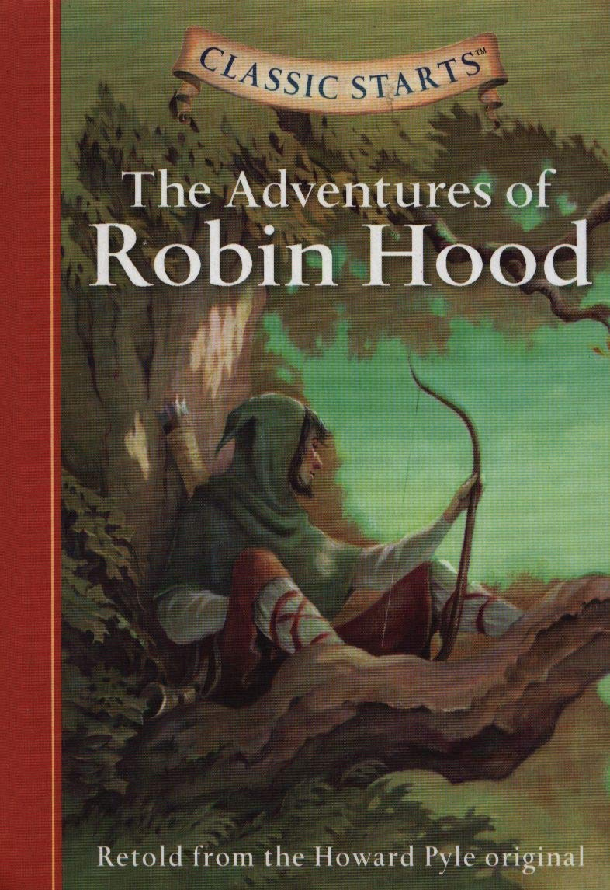

0
стр. з
0
сторінок

завантаження...

Робин Гуд
Книгу адаптировала Ольга Ламонова
Метод чтения Ильи Франка
Сontents
A FIGHT ON THE BRIDGEROBIN HOOD AND THE KNIGHTTHE KNIGHT AND THE ABBOTAT THE SHERIFF'S SERVICEFRIAR TUCKROBIN HOOD GETS BACK HIS MONEYROBIN HOOD AND MARIANROBIN HOOD THE BUTCHERALAN-A-DALEROBIN HOOD AND THE TWO MONKSTHE TOURNAMENT OF NOTTINGHAMROBIN HOOD SAVES SIR RICHARD OF THE LEEROBIN HOOD AND THE KINGROBIN HOOD IN LONDONTHE END
Chapter 1
A FIGHT ON THE BRIDGE
(Поединок на мосту; fight — бой, битва; драка, схватка; to fight — драться, сражаться, воевать).
Not only Robin Hood was the most famous bowman in England (Робин Гуд был не только самым известным лучником в Англии; famous — видный, выдающийся; знаменитый, известный; bow — лук /оружие/; bowman — стрелок /из лука/, лучник), he could fight excellently with a sword as well (он также мог отлично сражаться мечом). Moreover, he could use the quarterstaff better than any other man (более того, он мог пользоваться = владел дубинкой лучше, чем любой другой человек; to use — использовать, пользоваться, применять; quarterstaff — дубина, палица с железным наконечником, использовавшаяся крестьянами в Англии). The quarterstaff was a yeoman's weapon (такая дубинка была оружием йоменов; yeoman — /ист./ йомен /крестьянин, ведший самостоятельное хозяйство/; мелкий землевладелец, фермер).
famous ['feImqs], bowman ['bqumqn], England ['INglqnd], could [kud], fight [faIt], excellently ['eks(q)lqntlI], quarterstaff ['kwO:tq"stQ:f], yeoman ['jqumqn], weapon ['wepqn]
Not only Robin Hood was the most famous bowman in England, he could fight excellently with a sword as well. Moreover, he could use the quarterstaff better than any other man. The quarterstaff was a yeoman's weapon.
One day, Robin went to the forest looking for deer (однажды Робин пошел в лес в поисках оленя; to look for — искать). His sword was hung at his side (на боку у него висел его меч; to hang — вешать; висеть; side — сторона; бок), he carried his bow in his hand (в руке он нес свой лук; to carry — нести, носить), while his good arrows were carried at his back (а свои хорошие = меткие стрелы он нес у себя за спиной: «в то время как его добрые стрелы были несомы у него за спиной»). Wandering in the deep forest (прохаживаясь по чаще леса; to wander — бродить, странствовать; прохаживаться, прогуливаться; deep — глубокий), Robin saw a group of deer on the far side of a small river (Робин увидел стадо оленей на противоположном берегу небольшой речки; to see — видеть, глядеть; group — группа; far — дальний, отдаленный; дальний /из двух имеющихся, напр., о берегах реки/; side — сторона, бок; берег).
deer [dIq], arrow ['xrqu], were [wq:], wandering ['wOndqrIN], group [gru:p]
One day, Robin went to the forest looking for deer. His sword was hung at his side, he carried his bow in his hand, while his good arrows were carried at his back. Wandering in the deep forest, Robin saw a group of deer on the far side of a small river.
A narrow bridge crossed over the river (узкий мостик был переброшен через речушку; to cross over — переходить, пересекать), and a man was standing still on it (и на нем неподвижно стоял какой-то человек; still — неподвижно, спокойно, тихо).
He was a huge man, more than six feet tall (это был огромных /размеров/ человек, более шести футов ростом; huge — большой, гигантский; foot — ступня; фут /единица длины; = 30,48 см; = 1/3 ярда/; tall — высокий; имеющий такой-то /определенный/ рост), and he was armed with a big thick quarterstaff (и он был вооружен большой толстой палицей; arms — оружие; to arm — вооружаться).
When Robin reached the end of the bridge (когда Робин добрался до конца моста; to reach — протягивать, вытягивать; достигать, доходить), the huge man remained motionless, as if blocking the way (гигант оставался недвижимым, словно преграждая путь; motion — движение; жест, телодвижение; изменение позы; motionless — неподвижный, без движения; to block — заграждать, преграждать, препятствовать).
narrow ['nxrqu], huge [hju:dZ], motionless ['mquS(q)nlIs]
A narrow bridge crossed over the river, and a man was standing still on it. He was a huge man, more than six feet tall, and he was armed with a big thick quarterstaff.
When Robin reached the end of the bridge, the huge man remained motionless, as if blocking the way.
Robin Hood greeted him saying (Робин Гуд поприветствовал его, сказав), «Good morning sir (доброе утро, сэр). I want to get to the other side of the river (я хочу перейти на другой берег реки; to get to a place — попадать куда-либо, добираться до какого-либо места).»
The man still remained motionless (человек продолжал все так же неподвижно стоять; still — до сих пор, все еще; to remain — оставаться; оставаться в каком-либо состоянии; motionless — неподвижный), as if he hadn't heard or even noticed Robin (словно он не слышал или даже не заметил Робина; to hear — слышать).
Robin Hood grew angry (Робин Гуд рассердился; to grow — расти; делаться, становиться; angry — рассерженный, сердитый, разгневанный). He put an arrow to his bow, and said (он вложил стрелу в лук и сказал), «Let me come over the bridge (позволь мне пройти по мосту; to let smb. do smth. — разрешить, позволить кому-либо сделать что-либо; over — зд. указывает на движение через что-либо).»
sir [sq:], other ['ADq], heard [hq:d], even ['i:v(q)n], notice ['nqutIs], grew [gru:]
Robin Hood greeted him saying, «Good morning sir. I want to get to the other side of the river.»
The man still remained motionless, as if he hadn't heard or even noticed Robin.
Robin Hood grew angry. He put an arrow to his bow, and said, «Let me come over the bridge.»
«You're very brave (ты очень храбрый)!» the big man said sarcastically (насмешливо сказал высокий мужчина; sarcasm — сарказм; sarcastic — саркастический, язвительный; sarcastically — саркастически, с сарказмом, насмешливо). «You want to fight with your bow and arrow (ты хочешь сражаться своим луком и стрелами), while I only have a staff (тогда как у меня только дубинка)!»
«Are you good at using the staff (а ты умело пользуешься дубинкой; good — хороший; искусный, умелый; to be good at smth. — быть способным к чему-либо; staff — посох, палка; дубинка)?» Robin asked as he ran to some young trees and cut a strong staff for himself (спросил Робин, подбежав к нескольким молодым деревцам и срезав крепкую дубинку для себя; to run — бежать, бегать).
said [sed], sarcastically [sQ:'kxstIk(q)lI], young [jAN]
«You're very brave!» the big man said sarcastically. «You want to fight with your bow and arrow, while I only have a staff!»
«Are you good at using the staff?» Robin asked as he ran to some young trees and cut a strong staff for himself.
He left his bow and arrows on the ground (он оставил свой лук и стрелы на земле; to leave — покидать /кого-либо; какое-либо место/; оставлять), and returned to the bridge saying (и вернулся к мосту, приговаривая), «We'll fight for the bridge (мы будем сражаться за этот мост). The one who falls into the river is the loser (тот, кто упадет в речку, проиграл: «проигравший»; to lose — не сохранять, терять /что-либо/; проигрывать, уступать; loser — теряющий, проигрывающий; проигравший).»
«Ha, ha! Yes!» the big man laughed and said mockingly (рассмеялся высокий мужчина и сказал с издевкой; big — большой, крупный; высокий; mock — высмеивание, осмеяние; насмешка; mockingly — насмешливо, насмехаясь; с издевкой). «I love to fight (мне нравится сражаться; to love — любить; любить, обожать /какое-либо занятие, делать что-либо/), and I hope you love to have a nice cold bath (и я надеюсь, тебе понравится принять прекрасную холодную ванну; bath — ванна; купание /в ванне/; to have a bath — принять ванну)!»
ground [graund], return [rI'tq:n], who [hu:], loser ['lu:zq], laugh [lQ:f], love [lAv], bath [bQ:T]
He left his bow and arrows on the ground, and returned to the bridge saying, «We'll fight for the bridge. The one who falls into the river is the loser.»
«Ha, ha! Yes!» the big man laughed and said mockingly. «I love to fight, and I hope you love to have a nice cold bath!»
Soon the fight started (вскоре началась сама схватка), and the two men were quick and skilled in staff fighting (и двое мужчин были подвижны и искусны в сражении на дубинках; quick — быстрый, скорый; skill — искусство, мастерство; ловкость, сноровка; skilled — искусный, умелый). Each tried to hit the other and beat him (каждый пытался нанести удар и одолеть другого; to hit — ударять, поражать; to beat — бить, колотить; побеждать, побивать), but each was very quick to stop the other's strike with his own staff (но каждый оказывался достаточно проворен, чтобы остановить = отразить удар другого своей /собственной/ дубинкой).
They fought bravely for an hour (они храбро сражались около часа; to fight — драться, сражаться), their staffs moving, hitting, and defending very fast (/при этом/ их дубинки двигались, наносили удары и защищали /сражающихся/ очень быстро).
quick [kwIk], hour ['auq], their [Deq]
Soon the fight started, and the two men were quick and skilled in staff fighting. Each tried to hit the other and beat him, but each was very quick to stop the other's strike with his own staff.
They fought bravely for an hour, their staffs moving, hitting, and defending very fast.
At last Robin Hood managed to hit the big man on the head (в конце концов Робину Гуду удалось ударить высокого мужчину по голове; to manage — руководить, управлять; ухитриться, суметь сделать /что-либо/). Robin Hood started to laugh (Робин Гуд начал смеяться = рассмеялся), but it was too soon to laugh (но смеяться было слишком рано; soon — скоро, вскоре; рано)! The big man's staff came down suddenly on Robin's staff so fiercely that it broke (дубинка большого мужчины обрушилась внезапно на дубинку Робина так яростно = с такой силой, что та сломалась; fierce — жестокий, лютый; fiercely — свирепо, люто; неистово, сильно, яростно; to break — ломать, разбивать /на части/), since it was still too green (так как она все еще была слишком зеленой; green — зеленый, зеленого цвета; незрелый, сырой). Robin tripped over the side of the bridge and fell into the river (Робин свалился с моста: «через сторону/бок моста» и упал в речку; to trip — спотыкаться, падать; опрокидываться).
manage ['mxnIdZ], head [hed], suddenly ['sAdnlI], fiercely ['fIqslI]
At last Robin Hood managed to hit the big man on the head. Robin Hood started to laugh, but it was too soon to laugh! The big man's staff came down suddenly on Robin's staff so fiercely that it broke, since it was still too green. Robin tripped over the side of the bridge and fell into the river.
The huge man looked at him smiling (великан: «огромный мужчина» взглянул на него, улыбаясь). Then he called out (затем он выкрикнул), «Are you hurt (ты не ранен; to hurt — причинить боль, ранить, ушибить)? Do you want help (тебе помощь нужна; to want — желать, хотеть; испытывать недостаток, нехватку, нужду /в чем-либо/)?»
Luckily, Robin Hood had a strongly built body, so he wasn't hurt (к счастью, у Робина Гуда было крепко сложенное тело = было крепкое телосложение, поэтому он не был ранен; luck — фортуна, судьба; везение, удача, успех; to build — сооружать, строить). As he climbed up the river bank, he was laughing (когда он вылез: «вскарабкался» на берег реки, он смеялся). He said (он сказал), «It was a good fight (это была хорошая схватка). You are really a brave strong man (ты действительно храбрый и сильный человек). How can I help you (чем я могу быть тебе полезен: «чем я могу тебе помочь»)?»
hurt [hq:t], build [bIld], built [bIlt], climb [klaIm], really ['rIqlI]
The huge man looked at him smiling. Then he called out, «Are you hurt? Do you want help?»
Luckily, Robin Hood had a strongly built body, so he wasn't hurt. As he climbed up the river bank, he was laughing. He said, «It was a good fight. You are really a brave strong man. How can I help you?»
The huge fellow said (великан сказал; fellow — приятель, товарищ), «I am searching for Robin Hood (я ищу Робина Гуда). I want to be one of his men (я хочу стать одним из его людей). Can you help me find him (можешь ли ты мне помочь найти его)?»
Robin Hood took his horn and blew it (Робин Гуд взял свой /охотничий/ рожок и дунул в него; horn — рог; рожок, рог; to blow — веять, дуть /о ветре/; играть /на духовом инструменте/, давать сигнал /подъема, тревоги и т. п. с помощью трубы, горна и т. п./). Suddenly twenty men in green were at the bridge (неожиданно у моста появились двадцать мужчин в зеленом).
fellow ['felqu], searching ['sq:CIN], find [faInd], blew [blu:]
The huge fellow said, «I am searching for Robin Hood. I want to be one of his men. Can you help me find him?»
Robin Hood took his horn and blew it. Suddenly twenty men in green were at the bridge.
One of his men, Will Scarlet, looked at him nervously and said (один из его людей, Уилл Скарлет, обеспокоенно взглянул на него и спросил: «сказал»; nervous — нервный; беспокоящийся /о чем-либо/; scarlet — алый, ярко-красный; одетый в красное /видимо, Уилл Скарлет носил алую шелковую одежду/), «Have you been thrown into the water (тебя что, сбросили в воду: «ты был сброшен в воду»; to throw — бросать, кидать, метать; сбрасывать, скидывать)? Did this man do this to you (этот человек сделал это /с тобой/)? Shall we teach him a good lesson and give him a bath, Robin (преподать ли нам ему хороший урок и искупать его: «дать ему купание», Робин; to teach — учить, обучать; проучить; lesson — урок; нравоучение, наставление)?»
scarlet ['skQ:lIt], nervously ['nq:vqslI], lesson [lesn], give [gIv]
One of his men, Will Scarlet, looked at him nervously and said, «Have you been thrown into the water? Did this man do this to you? Shall we teach him a good lesson and give him a bath, Robin?»
«Robin!» the big man shouted with surprise (удивленно воскликнул высокий: «большой» мужчина; to shout — кричать; surprise — удивление, изумление). «Are you Robin Hood (ты Робин Гуд)? Have I hit Robin Hood with my quarterstaff (я что, ударил своей дубинкой /самого/ Робина Гуда)? I am deeply sorry (мне очень жаль: «я глубоко сожалеющий»; deeply — глубоко; крайне, очень). Do forgive me, Robin Hood (пожалуйста, прости меня, Робин Гуд). I didn't know who you are (я не знал, кто ты).»
surprise [sq'praIz], forgive [fq'gIv], know [nqu]
«Robin!» the big man shouted with surprise. «Are you Robin Hood? Have I hit Robin Hood with my quarterstaff? I am deeply sorry. Do forgive me, Robin Hood. I didn't know who you are.»
Robin Hood laughed again (Робин Гуд снова рассмеялся), and he told his men about the fight he had on the bridge (и он рассказал своим людям о схватке, которая произошла у него на мосту: «которую он имел на мосту»; to tell — говорить, сказать; рассказывать). He also told them that that brave man wanted to join them and be one of them (он также сказал им, что этот храбрый человек хочет присоединиться к ним и быть одним из них; to join — соединять, объединять; присоединяться /к кому-либо/). Robin then talked to the man (затем Робин заговорил с этим мужчиной). «I like you (ты мне нравишься) — you're really courageous and strong (ты на самом деле отважный и сильный; courage — бесстрашие, мужество, отвага, смелость). What's your name (как тебя зовут: «каково твое имя»)?»
again [q'gen], join [dZOIn], courageous [kq'reIdZqs]
Robin Hood laughed again, and he told his men about the fight he had on the bridge. He also told them that that brave man wanted to join them and be one of them. Robin then talked to the man. «I like you — you're really courageous and strong. What's your name?»
«My name is John Little (меня зовут: «мое имя» Джон Литтл; little — маленький).»
«Little (Литтл)?» Robin Hood burst with laughter (Робин Гуд расхохотался; to burst — лопаться, разрываться, взрываться /о снаряде и т. п./; разражаться /гневом, слезами, смехом и т. п./, давать выход чувствам) because John was so huge, and not little at all (потому что Джон был настолько велик /ростом/, а вовсе не маленьким; huge — огромный). «I think it's better to call you little John (мне кажется, что лучше называть тебя маленький Джон/малыш Джон).»
burst [bq:st], laughter ['lQ:ftq], because [bI'kOz]
«My name is John Little.»
«Little?» Robin Hood burst with laughter because John was so huge, and not little at all. «I think it's better to call you little John.»
So little John went with Robin Hood and his men (итак, маленький Джон пошел вместе с Робином Гудом и его людьми). They made a fire and dried Robin's clothes (они развели костер и высушили одежду Робина; fire — огонь, пламя; to dry — сушить, высушивать). Then they cooked some good deer meat and had a great meal (затем они зажарили отличное оленье мясо и великолепно поели; to cook — готовить, стряпать; great — большой, огромный, замечательный, великолепный; meal — прием пищи, еда).
fire ['faIq], dry [draI], dried [draId], clothes [klquDz], some [sAm], meat [mi:t], great [greIt], meal [mi:l]
So little John went with Robin Hood and his men. They made a fire and dried Robin's clothes. Then they cooked some good deer meat and had a great meal.
Early the next morning, at Robin Hood's green wood tree (рано утром следующего дня, у зеленого дерева Робина Гуда), little John was given clothes of Lincoln green and a bow (маленькому Джону дали наряд ярко-зеленого цвета и лук; Lincoln — линкольн; линкольнская порода овец; Lincoln green — сукно линкольн /ярко-зеленое/; ярко-зеленый цвет /под цвет леса/), thus actually becoming one of Robin Hood's men (и таким образом он в самом деле стал одним из товарищей Робина Гуда; actually — фактически, на самом деле).
«I'll teach you how to use the bow (я научу тебя, как пользоваться луком)» said Robin Hood (сказал Робин Гуд). «You will surely become a wonderful bowman (из тебя обязательно выйдет замечательный лучник; sure — уверенный; несомненный; surely — конечно, непременно; обязательно, непременно; wonder — удивление, изумление; wonderful — замечательный, изумительный), since you're so strong and so tall (раз уж ты такой сильный и такой высокий).»
early ['q:lI], given [gIvn], Lincoln ['lINkqn], actually ['xktSuqlI], becoming [bI'kAmIN], surely ['SuqlI], become [bI'kAm], wonderful ['wAndqful]
Early the next morning, at Robin Hood's green wood tree, little John was given clothes of Lincoln green and a bow, thus actually becoming one of Robin Hood's men.
«I'll teach you how to use the bow.» said Robin Hood. «You will surely become a wonderful bowman, since you're so strong and so tall.»
Chapter 2
ROBIN HOOD AND THE KNIGHT
(Робин Гуд и Рыцарь).
A knight came riding through the trees in the greenwood (меж деревьев в зеленом лесу ехал верхом один рыцарь; greenwood — лиственный лес, лес в зеленом наряде). He rode like a poor man, on an old horse and in old clothes (он ехал, как бедный человек, на старой кляче и в старой одежде; to ride — ехать верхом; horse — конь, лошадь).
Suddenly he heard (внезапно он услышал): «Welcome, good knight (добро пожаловать, добрый рыцарь)! Welcome to the green wood (добро пожаловать в зеленый лес)!»
knight [naIt], through [Tru:], poor [puq], horse [hO:s], heard [hq:d], welcome ['welkqm]
A knight came riding through the trees in the greenwood. He rode like a poor man, on an old horse and in old clothes.
Suddenly he heard: «Welcome, good knight! Welcome to the green wood!»
The knight looked up (рыцарь поднял глаза; to look up — смотреть вверх, поднимать глаза). Two yeomen in green clothes stood at his horse's head (у головы его лошади стояли два йомена в зеленом). They had arrows ready to shoot from their long bows (у них были стрелы, которыми они готовы были выстрелить из своих длинных луков).
«Who are you (кто вы такие)?» the knight asked (спросил рыцарь).
The bigger man answered (мужчина повыше ответил): «They call me Little John (меня зовут Малыш Джон/Маленький Джон). And my friend here is Much the miller's son (а это мой друг Мач, сын мельника; mill — мельница; to mill — молоть /зерно/, изготовлять муку; miller — мельник). We are Robin Hood's men (мы люди Робина Гуда).»
head [hed], ready ['redI], ask [Q:sk], answer ['Q:nsq], friend [frend], here [hIq], son [sAn]
The knight looked up. Two yeomen in green clothes stood at his horse's head. They had arrows ready to shoot from their long bows.
«Who are you?» the knight asked.
The bigger man answered: «They call me Little John. And my friend here is Much the miller's son. We are Robin Hood's men.»
«I know about Robin Hood (я знаю = слышал о Робине Гуде),» said the knight. «He is a good man (он хороший человек). He takes money from those who have a lot (он забирает деньги у тех, у кого их в избытке; lot — лот, жребий; уйма, масса, много), but he gives it to the poor (но он отдает их бедным). He never takes anything from women or from good yeomen (он никогда не берет ничего у женщин или у добрых крестьян) who work in the fields or in the forest (которые работают на полях или в лесу).»
«That's right (это верно),» Little John said. «And now will you come with us (а теперь, пойдешь ли ты с нами = иди с нами)? Robin is waiting for his dinner (Робин ждет обеда). He told us to find somebody to have dinner with him (он велел нам найти кого-нибудь, с кем бы он мог пообедать).»
about [q'baut], money ['mAnI], never ['nevq], women ['wImIn], field [fi:ld], forest ['fOrIst], somebody ['sAmbqdI]
«I know about Robin Hood,» said the knight. «He is a good man. He takes money from those who have a lot, but he gives it to the poor. He never takes anything from women or from good yeomen who work in the fields or in the forest.»
«That's right,» Little John said. «And now will you come with us? Robin is waiting for his dinner. He told us to find somebody to have dinner with him.»
«I wasn't going to have any dinner today (я не собирался = не надеялся пообедать сегодня),» the knight said. «I'll come with you gladly (я с радостью пойду с вами).»
Little John and Much brought the knight to Robin Hood (Малыш Джон и Мач отвели рыцаря к Робину Гуду; to bring — приносить, привозить; приводить /с собой/).
«Welcome, Sir Knight (добро пожаловать, сэр рыцарь),» said Robin. «I am Sir Richard of the Lee (я — сэр Ричард из Ли),» said the knight.
«Then, Sir Richard, let us have dinner (тогда, сэр Ричард, давай пообедаем).»
today [tq'deI], gladly ['glxdlI], brought [brO:t]
«I wasn't going to have any dinner today,» the knight said. «I'll come with you gladly.»
Little John and Much brought the knight to Robin Hood.
«Welcome, Sir Knight,» said Robin. «I am Sir Richard of the Lee,» said the knight.
«Then, Sir Richard, let us have dinner.»
It was a very good dinner (обед был очень хорошим). There was fish from the river (была рыба из реки), deer from the forest (олень из леса) — as much as the knight could eat (столько, сколько: «так много как» рыцарь мог съесть).
«I haven't had a dinner like that for a long time, Robin (я так не обедал очень давно, Робин),» he said. «Thank you (благодарю тебя)!»
was [wOz], could [kud], haven't [hxvnt]
It was a very good dinner. There was fish from the river, deer from the forest — as much as the knight could eat.
«I haven't had a dinner like that for a long time, Robin,» he said. «Thank you!»
«Do you want to pay something for it (не хочешь ли ты заплатить чем-нибудь за него)?» Robin Hood asked. «If you do (если ты заплатишь), I can give food like that to other people, poor people (я смогу дать пищу, подобную этой, другим людям, бедным людям).»
«I'd like to pay (я бы хотел заплатить),» said the knight, «but I don't have much money, only one piece of gold (но у меня нет много денег, только одна золотая монета; piece — кусок, часть; монета; gold — золото).»
want [wOnt], something ['sAmTIN], other ['ADq], people [pi:pl], piece [pi:s]
«Do you want to pay something for it?» Robin Hood asked. «If you do, I can give
food like that to other people, poor people.»
«I'd like to pay,» said the knight, «but I don't have much money, only one piece of gold.»
Robin looked at him (Робин взглянул на него). «If that is all you have, I won't take it (если это все, что у тебя есть, то я не возьму ее). And if you need more, you can have it (и если тебе нужно больше, то ты сможешь взять /больше/). But Little John must see (но Малыш Джон должен взглянуть /и убедиться, что это так/).»
Little John looked in the knight's bags (Малыш Джон заглянул в сумки рыцаря; bag — мешок, сумка; вещи). «It's right (все верно),» he said. «The knight doesn't have more than one piece of gold (у рыцаря ничего нет, кроме одной золотой монеты: «рыцарь не владеет ничем больше, чем одной золотой монетой»).»
won't [wqunt], more [mO:], right [raIt]
Robin looked at him. «If that is all you have, I won't take it. And if you need more, you can have it. But Little John must see.»
Little John looked in the knight's bags.
«It's right,» he said. «The knight doesn't have more than one piece of gold.»
«Do you want to tell us why (ты хочешь рассказать нам, из-за чего = расскажи нам, отчего так /получилось/; why — почему)?» Robin asked.
«Yes, Robin,» said Sir Richard. «I had a son (у меня был сын). He killed a knight (он убил одного рыцаря). It was in a fair fight at the tournament field (и случилось это в честном поединке на турнирном поле = на ристалище; fair — порядочный, честный, справедливый; tournament — средневековый рыцарский турнир; field — поле, луг; поле сражения), but the proud sheriff of Nottingham put my son in prison (но гордый шериф Ноттингемский бросил: «поместил» моего сына в тюрьму; proud — гордый; высокомерный, надменный). To get him out of prison (чтобы вызволить его /моего сына/ из тюрьмы), he took all my money and more (он забрал все мои деньги и даже больше). I had to borrow (мне пришлось брать взаймы; to borrow — занимать, брать на время).»
fair [feq], tournament ['tuqnqmqnt], proud [praud], sheriff ['SerIf], Nottingham ['nOtINqm], prison [prIzn], borrow ['bOrqu]
«Do you want to tell us why?» Robin asked.
«Yes, Robin,» said Sir Richard. «I had a son. He killed a knight. It was in a fair fight t at the tournament field, but the proud sheriff of Nottingham put my son in prison. To get him out of prison, he took all my money and more. I had to borrow.»
«You borrowed from your friends (ты занял у своих друзей)?» Robin said.
«No. When I was rich, I had friends (когда я был богат, у меня были друзья). When I wanted money, they all left me (когда мне понадобились деньги, они все покинули меня; to leave — покидать /кого-либо; какое-либо место/). I had to borrow from the rich abbot of the Abbey of St. Mary (мне пришлось занять у богатого аббата из Аббатства Святой Марии; abbot — аббат, настоятель монастыря; abbey — аббатство, монастырь; St. = saint — святой). I must pay him back four hundred pieces of gold (я должен выплатить ему четыреста золотых монет; to pay back — вознаграждать, отплачивать: «платить назад = обратно»). If I can't pay him back the money tomorrow (если я не смогу выплатить ему деньги завтра), he will take my castle and all my lands (он заберет мой замок и все мои земли).»
abbot ['xbqt], abbey ['xbI], four [fO:], hundred ['hAndrqd], tomorrow [tq'mOrqu], castle [kQ:sl]
«You borrowed from your friends?» Robin said.
«No. When I was rich, I had friends. When I wanted money, they all left me. I had to borrow from the rich abbot of the Abbey of St. Mary. I must pay him back four hundred pieces of gold. If I can't pay him back the money tomorrow, he will take my castle and all my lands.»
Robin spoke to Little John (Робин заговорил с Малышом Джоном = обратился к Малышу Джону; to speak — говорить, разговаривать). «Go to our hiding-place, Little John (отправляйся в наше тайное укрытие, Малыш Джон; to hide — прятаться, скрываться; hiding-place — потаенное, тайное место; укрытие, тайник), and get four hundred pieces of gold (и возьми четыреста золотых монет). Sir Richard can borrow it from us (сэр Ричард может занять их у нас).»
Little John counted out more than four hundred pieces of gold (Малыш Джон отсчитал более четырехсот золотых монет; to count — пересчитывать, вычислять, подсчитывать).
«Can't you count (ты что, не умеешь считать)?» asked Much.
«This is the way to count money when a poor knight has to have it (именно так и надо считать деньги, когда в них нуждается бедный рыцарь: «бедный рыцарь вынужден взять их»).»
hiding-place ['haIdINpleIs], count out ['kaunt'aut], can't [kQ:nt]
Robin spoke to Little John. «Go to our hiding-place. Little John, and get four hundred pieces of gold. Sir Richard can borrow it from us.»
Little John counted out more than four hundred pieces of gold.
«Can't you count?» asked Much.
«This is the way to count money when a poor knight has to have it.»
«Robin,» said Little John, «this man is a knight (этот человек — рыцарь), but his clothes are very old (а его одежда очень старая). You must give him the right clothes for a knight (ты должен дать ему подходящую для рыцаря одежду; right — правый, правильный; подходящий, надлежащий). We have good green cloth (у нас есть хорошая зеленая материя; cloth — ткань /любая ткань из шерсти животных или из растений; без уточнения, обыкн. имеется в виду шерстяная/)...»
«Yes,» said Robin. «Give him three yards (дай ему три ярда; yard — ярд /мера длины, равная 3 футам или 91,44 см/).»
Little John gave the knight four yards of Lincoln green cloth (Малыш Джон дал рыцарю четыре ярда ярко-зеленого сукна).
clothes [klquDz], cloth [klOT], old [quld]
«Robin,» said Little John, «this man is a knight, but his clothes are very old. You must give him the right clothes for a knight. We have good green cloth...»
«Yes,» said Robin. «Give him three yards.»
Little John gave the knight four yards of Lincoln green cloth.
Then he said, «And the knight must have a good horse (и у рыцаря должен быть хороший конь), not the old one he came on (а не такой старый, как тот, на котором он приехал).»
«Yes,» said Robin Hood. «Give him a good horse (дай ему хорошего коня).»
Little John gave him Robin's best horse (Малыш Джон дал ему самого лучшего коня Робина).
then [Den], must [mAst], yes [jes]
Then he said, «And the knight must have a good horse, not the old one he came on.»
«Yes,» said Robin Hood. «Give him a good horse.» Little John gave him Robin's best horse.
Sir Richard of the Lee thanked Robin for all these things (сэр Ричард из Ли поблагодарил Робина за все эти дары: «вещи»).
«When must I pay back the money I am borrowing from you (когда я должен выплатить деньги, которые я сейчас у тебя занимаю)?» he asked.
«In one year from today, if you can (через год после сегодняшнего дня, если сможешь),» said Robin, «under this greenwood tree (под этим лиственным деревом = под этим дубом). Now go and pay the abbot (а теперь поезжай и расплатись с аббатом). And a knight mustn't ride alone (и рыцарю не должно ездить верхом одному). Little John will go with you and help you (Малыш Джон пойдет с тобой и поможет тебе).»
these [Di:z], year [jq:], under ['Andq], greenwood ['gri:nwud]
Sir Richard of the Lee thanked Robin for all these things. «When must I pay back the money I am borrowing from you?» he asked.
«In one year from today, if you can,» said Robin, «under this greenwood tree. Now go and pay the abbot.. And a knight mustn't ride alone. Little John will go with you and help you.»
Chapter 3
THE KNIGHT AND THE ABBOT
(Рыцарь и аббат).
«We must go to York (мы должны поехать в Йорк),» said Sir Richard of the Lee to Little John (сказал сэр Ричард из Ли Малышу Джону). «I must pay the Abbot of St. Mary the four hundred pieces of gold tomorrow (завтра я должен заплатить аббату /аббатства/ Святой Марии четыреста золотых монет), or he can take my castle and all my lands (или он сможет забрать мой замок и все мои земли).»
The next day, the abbot was at dinner in the great hall of his abbey (на следующий день аббат обедал: «был за обедом» в большом зале своего аббатства; hall — усадьба, поместье; замок /какого-либо вельможи и т. п./; зал, холл, столовая /большая комната для общественных приемов или мероприятий и т. п./). The Sheriff of Nottingham and many other lords were with him (шериф Ноттингемский и многие другие лорды были = обедали с ним).
York [jO:k], Richard ['rICqd], Lee [li:], lord [lO:d]
«We must go to York,» said Sir Richard of the Lee to Little John. «I must pay the Abbot of St. Mary the four hundred pieces of gold tomorrow, or he can take my castle and all my lands.»
The next day, the abbot was at dinner in the great hall of his abbey. The Sheriff of Nottingham and many other lords were with him.
Sir Richard of the Lee and Little John came into the hall (сэр Ричард из Ли и Малыш Джон вошли в зал). The knight went down on his knee in front of the abbot, and said (рыцарь опустился на колено перед аббатом и сказал; to go down — спускаться, опускаться; in front of — перед, впереди): «Sir Abbot, I borrowed money from you (господин аббат, я занимал у тебя деньги), and today is the day that I must pay it back (и сегодня тот самый день, когда я должен вернуть их: «выплатить их /обратно/»).»
hall [hO:l], knee [ni:], front [frAnt]
Sir Richard of the Lee and Little John came into the hall. The knight went down on his knee in front of the abbot, and said: «Sir Abbot, I borrowed money from you, and today is the day that I must pay it back.»
«Have you brought the money (ты принес деньги)?» asked the abbot, and he didn't look pleased (спросил аббат, и он не выглядел довольным; to look — смотреть, глядеть; выглядеть, казаться; pleased — довольный).
Sir Richard said nothing (сэр Ричард ничего не сказал).
«No?» said the abbot, and he looked glad (сказал аббат, и /теперь/ он выглядел довольным). «Then why have you come (тогда зачем ты пришел)?»
pleased [pli:zd], nothing ['nATIN], glad [glxd]
«Have you brought the money?» asked the abbot, and he didn't look pleased.
Sir Richard said nothing.
«No?» said the abbot, and he looked glad. «Then why have you come?»
«Can I ask for more time to pay (могу ли я попросить отсрочку для выплаты: «больше времени, чтобы заплатить»; time — время)?» said the knight. «You say you are the servant of God (ты говоришь, что ты слуга Господа), and in God's name I ask it (и во имя Господа я прошу об этом; in the name of — во имя).»
«No,» said the abbot. «Your castle and lands are mine now (твой замок и земли теперь мои).»
Sir Richard asked the sheriff and the other lords to help him (сэр Ричард попросил шерифа и других феодалов помочь ему; lord — господин, владыка; феодальный сеньор).
«No,» they all said (сказали они все). «You have lost your castle and all your lands (ты потерял свой замок и все свои земли; to lose — не сохранять, терять /что-либо/; не сохранять, терять /что-либо/). Go away (уходи; to go away — уходить, уезжать).»
servant ['sq:v(q)nt], lost [lOst], away [q'weI]
«Can I ask for more time to pay?» said the knight. «You say you are the servant of God, and in God's name I ask it.»
«No,» said the abbot. «Your castle and lands are mine now.»
Sir Richard asked the sheriff and the other lords to help him.
«No,» they all said. «You have lost your castle and all your lands. Go away.»
The knight stood up (рыцарь встал/поднялся; to stand up — вставать). «I will pay you your money (я заплачу тебе деньги). And God will judge you because you wanted to take my castle and my lands (и Господь будет судить тебя за то, что ты хотел забрать мой замок и мои земли; to judge — судить, выносить приговор; because — потому что, так как).»
He spoke to Little John (он поговорил с Малышом Джоном), and John counted the four hundred pieces of gold, one at a time (и Джон отсчитал четыре сотни золотых монет, по одной: «по одной за раз»; time — время; раз), on to the table in front of the abbot (/выкладывая их/ на стол перед аббатом): «One piece for the abbot, the servant of God (одна монета для аббата, слуги Господа). Two pieces for the abbot (две монеты для аббата). Three pieces for the abbot (три монеты для аббата). Four (четыре)...» Up to (вплоть до): «Four hundred pieces for the abbot, the servant of God (четыреста монет для аббата, слуги Господа).»
judge [dZAdZ], count [kaunt], table [teIbl]
The knight stood up. «I will pay you your money. And God will judge you because you wanted to take my castle and my lands.»
He spoke to Little John, and John counted the four hundred pieces of gold, one at a time, on to the table in front of the abbot: «One piece for the abbot, the servant of God. Two pieces for the abbot. Three pieces for the abbot. Four...» Up to: «Four hundred pieces for the abbot, the servant of God.»
Then the knight and Little John went away (после чего рыцарь и Малыш Джон ушли).
Sir Richard of the Lee went home in his new green clothes (сэр Ричард из Ли направился домой в своем новом зеленом костюме). His wife was waiting for him (его жена ожидала его; to wait for — ждать, выжидать).
«Have we lost everything (мы все потеряли; to lose)?» she asked.
new [nju:], wife [waIf], everything ['evrITIN]
Then the knight and Little John went away.
Sir Richard of the Lee went home in his new green clothes. His wife was waiting for him.
«Have we lost everything?» she asked.
«No,» he said. «The castle and my lands are ours (замок и мои земли наши). But we must thank Robin Hood for that (но мы должны благодарить Робина Гуда за это).»
The knight stayed in his castle and on his lands (рыцарь остался в своем замке и на своих землях; to stay — оставаться, не уходить), and he worked hard every day (и он много трудился каждый день; hard — жесткий, твердый; сильно, интенсивно; настойчиво, упорно, усердно; to work hard — много работать). At last he had four hundred pieces of gold (наконец, у него было четыреста золотых монет). He said to his wife (он сказал своей жене), «Now I have the money that I borrowed from Robin Hood (теперь у меня есть деньги, которые я занимал у Робина Гуда). But I want to take him a present too (но я хочу отнести ему еще и подарок; too — также, тоже; к тому же, более того).»
ours ['auqz], hard [hQ:d], present [preznt]
«No,» he said. «The castle and my lands are ours. But we must thank Robin Hood for that.»
The knight stayed in his castle and on his lands, and he worked hard every day. At last he had four hundred pieces of gold. He said to his wife, «Now I have the money that I borrowed from Robin Hood. But I want to take him a present too.»
So Sir Richard made a hundred good bows (поэтому сэр Ричард изготовил сотню хороших луков). And his wife and her ladies made a hundred times twenty good arrows (а его жена и ее служанки изготовили две тысячи: «сто раз по двадцать» хороших стрел; lady — леди, дама; хозяйка).
One year from the day the knight had seen Robin Hood (через год после того дня, когда рыцарь встретился с Робином Гудом; to see — видеть, глядеть; видаться, встречаться), he went to see him again (он поехал снова увидеться с ним). He took the four hundred pieces of gold (он взял /с собой/ четыреста золотых монет), and the bows and the arrows (луки и стрелы), and he went into the greenwood (и поехал в зеленый лес; greenwood — лиственный лес).
bow [bqu], ladies ['leIdIz], arrow ['xrqu]
So Sir Richard made a hundred good bows. And his wife and her ladies made a hundred times twenty good arrows.
One year from the day the knight had seen Robin Hood, he went to see him again. He took the four hundred pieces of gold, and the bows and the arrows, and he went into the greenwood.
Chapter 4
AT THE SHERIFF'S SERVICE
(На службе у шерифа; service — служба, занятие).
Meanwhile, Little John went to compete in a tournament with other men (а тем временем Малыш Джон отправился принять участие в турнире вместе с другими лучниками; to compete — состязаться, соперничать), for a gold and silver arrow (за стрелу из золота и серебра). He shot very well (он очень хорошо стрелял; to shoot — стрелять). His arrows all hit the mark (все его стрелы попали в цель; to hit — ударять; попадать в цель; mark — знак, метка; мишень, цель). The Sheriff of Nottingham gave him the gold and silver arrow (шериф Ноттингемский вручил ему стрелу из золота и серебра; to give — давать; вручать, передавать).
meanwhile ['mi:nwaIl], compete [kqm'pi:t], tournament ['tuqnqmqnt]
Meanwhile, Little John went to compete, in a tournament with other men, for a gold and silver arrow. He shot very well. His arrows all hit the mark. The Sheriff of Nottingham gave him the gold and silver arrow.
«This is the best bowman I ever saw (это самый лучший лучник, которого я когда-либо видел),» the sheriff thought (подумал шериф; to think).
«Young man (юноша: «молодой человек»),» he said to Little John (сказал он Малышу Джону), «what is your name, and where are you from (как тебя зовут и откуда ты)?»
«Men call me Reynold Greenleaf (люди зовут меня Рейнольд Гринлиф; to call — кричать, окликать; звать, называть; green — зеленый; leaf — лист),» said Little John, «and I'm from Holderness (и я из Хольдернеса).»
bowman ['bqumqn], thought [TO:t], young [jAN], call [kO:l], Reynold ['renld]
«This is the best bowman I ever saw,» the sheriff thought. «Young man,» he said to Little John, «what is your name, and where are you from?»
«Men call me Reynold Greenleaf,» said Little John,«and I'm from Holderness.»
«Well, Reynold Greenleaf (что ж, Рейнольд Гринлиф),» said the proud sheriff (сказал гордый шериф), «will you be my man (будешь ли ты моим слугой; man — человек; слуга)? I will give you good food and clothes (я дам тебе хорошее пропитание и одежду; food — пища, питание, еда), a good horse (хорошего коня), and fifteen pieces of gold a year (и пятнадцать золотых монет в год).»
«I'm the servant of a good knight (я /и так/ слуга добропорядочного рыцаря; good — хороший; достойный, добропорядочный, добродетельный),» said Little John, «but if he says yes, I'll work for you (но если он согласится: «скажет "да"», я буду работать на тебя).»
proud [praud], good [gud], food [fu:d], work [wq:k]
«Well, Reynold Greenleaf,» said the proud sheriff, «will you be my man? I will give you good food and clothes, a good horse, and fifteen pieces of gold a year.»
«I'm the servant of a good knight,» said Little John, «but if he says yes, I'll work for you.»
Sir Richard was working in his castle and on his land (сэр Ричард трудился в своем замке и на своей земле), and he didn't need Little John (и Малыш Джон был ему не нужен). And Robin Hood laughed when John said (и Робин Гуд рассмеялся, когда Джон сказал): «I’ll be the worst servant the proud sheriff ever had (я буду самым плохим слугой, который когда-либо был у гордого шерифа).»
So Little John became the sheriff’s man (так Малыш Джон стал слугой шерифа).
castle [kQ:sl], worst [wq:st], became [bI'keIm]
Sir Richard was working in his castle and on his land, and he didn't need Little John. And Robin Hood laughed when John said: «I’ll be the worst servant the proud sheriff ever had.»
So Little John became the sheriff’s man.
One Wednesday, the sheriff went into Sherwood Forest to shoot deer (однажды в среду шериф отправился в Шервудский лес, чтобы подстрелить оленя; Sherwood Forest — Шервудский лес /старинный королевский лес в графстве Ноттингемшир; с ним связаны легенды о Робине Гуде/). He thought that «Reynold Greenleaf» was with his men (он думал, что "Рейнольд Гринлиф" был с его слугами), but Little John was in bed (но Малыш Джон был = лежал в постели).
After a time, Little John went to the kitchen (спустя некоторое время Малыш Джон отправился на кухню), took some food (взял /себе/ немного еды), and sat down to eat it (и уселся поесть: «чтобы съесть ее»; to sit down — садиться). The sheriff’s cook found him there (там его и нашел повар шерифа; to find — находить, обнаруживать).
Wednesday ['wenzdI], Sherwood Forest ["Sq:wud'fOrIst], with [wID], kitchen ['kICIn], down [daun], cook [kuk], found [faund]
One Wednesday, the sheriff went into Sherwood Forest to shoot deer. He thought that «Reynold Greenleaf» was with his men, but Little John was in bed.
After a time, Little John went to the kitchen, took some food, and sat down to eat it. The sheriff’s cook found him there.
The cook was a strong man, and afraid of nobody (повар был сильным мужчиной и никого не боялся; afraid — испуганный, напуганный, боящийся).
«You take food from my kitchen (ты берешь = посмел взять пищу с моей кухни)!» he shouted (закричал он). «Take that (вот, получи: «возьми вот это»)!» And he hit Little John very hard (и он очень сильно/крепко ударил Малыша Джона).
Little John jumped up with his sword (Малыш Джон вскочил на ноги с мечом /в руке/), but the cook took a sword too (но повар тоже схватил меч; to take — брать). They fought for an hour (они сражались в течение часа; to fight).
afraid [q'freId], nobody ['nqubqdI], jump [dZAmp], sword [sO:d], fought [fO:t], hour ['auq]
The cook was a strong man, and afraid of nobody.
«You take food from my kitchen!» he shouted. «Take that!» And he hit Little John very hard.
Little John jumped up with his sword, but the cook took a sword too. They fought for an hour.
«You're one of the best swordsmen I ever met (ты один из самых лучших фехтовальщиков, с которым я когда-либо дрался; sword — меч, шпага, рапира; swordsman — фехтовальщик; to meet — встречать; сойтись в схватке /с кем-либо/),» said Little John, breathing hard (сказал Малыш Джон, тяжело дыша; hard — жесткий; сильно, интенсивно; тяжело, с трудом). «If you were as good with a bow (если бы ты столь же хорошо владел луком: «был бы столь же хорош с луком»), you could come to the greenwood with me (ты мог бы отправиться в зеленый лес со мной). Robin Hood would be glad to see you (Робин Гуд был бы рад видеть тебя).»
«Robin Hood?» cried the cook (воскликнул повар; to cry — кричать; восклицать). «Reynold Greenleaf, are you Little John (Рейнольд Гринлиф, ты — Малыш Джон)? I've heard of you (я слыхал о тебе). Stop fighting, and we'll be friends (прекрати драться, и будем друзьями). I hate the sheriff (я ненавижу шерифа).»
swordsmen ['sO:dzmqn], breathe [bri:D], breathing ['bri:DIN], heard [hq:d], fighting ['faItIN]
«You're one of the best swordsmen I ever met,» said Little John, breathing hard. «If you were as good with a bow, you could come to the greenwood with me. Robin Hood would be glad to see you.»
«Robin Hood?» cried the cook. «Reynold Greenleaf, are you Little John? I've heard of you. Stop fighting, and we'll be friends. I hate the sheriff.»
They sat down (они уселись /за стол/), and the cook brought out the best food and drink in the sheriff’s kitchen (и повар принес: «вынес» самую лучшую пищу и питье /что были/ на кухне шерифа; to bring out — выносить /наружу/; drink — питье, напиток; алкогольный напиток). Then they went to the sheriff’s strong-room (затем они направились в кладовую шерифа; strong-room — комната для хранения ценностей), and broke the great doors (и взломали большие двери; to break — ломать, разбивать /на части/; взламывать). There were gold and silver cups and other things (там были золотые и серебряные кубки и другие вещи; cup — чашка; чаша, бокал, кубок), and money: three hundred and three pieces of gold (и деньги: триста три золотые монеты). They took all these things and went to Robin's greenwood tree (они взяли все эти предметы и пошли к дубу: «к лесному дереву» Робина; greenwood — лиственный лес, лес в зеленом наряде; см. тж.: to go to the greenwood — стать разбойником, быть объявленным вне закона).
strongroom ['strONru(:)m], great [greIt], cup [kAp], thing [TIN]
They sat down, and the cook brought out the best food and drink in the sheriff’s kitchen. Then they went to the sheriff’s strong-room, and broke the great doors. There were gold and silver cups and other things, and money: three hundred and three pieces of gold. They took all these things and went to Robin's greenwood tree.
«Welcome (добро пожаловать),» said Robin to Little John, «and welcome to the good yeoman you've brought with you (и добро пожаловать доброму крестьянину, которого ты привел с собой). What's happening in Nottingham (что происходит = как дела в Ноттингеме; to happen — случаться, происходить)?»
«The sheriff sends you presents (шериф шлет тебе подарки). Here they are (вот они): his cook (его повар), and his best cups and other things (его самые лучшие кубки и другие вещи), and three hundred and three pieces of gold (и триста три золотые монеты).»
«I'd like to thank the sheriff (мне хотелось бы поблагодарить шерифа),» said Robin.
«Would you (хотелось бы)?» said Little John. And he ran into the greenwood and found the sheriff (и он убежал в зеленый лес и нашел шерифа; to run — бежать, бегать; to find — находить, обнаруживать).
welcome ['welkqm], yeoman ['jqumqn], happen ['hxp(q)n], happening ['hxp(q)nIN], here [hIq]
«Welcome,» said Robin to Little John, «and welcome to the good yeoman you've brought with you. What's happening in Nottingham?»
«The sheriff sends you presents. Here they are: his cook, and his best cups and other things, and three hundred and three pieces of gold.»
«I'd like to thank the sheriff,» said Robin.
«Would you?» said Little John. And he ran into the greenwood and found the sheriff.
«Where have you been, Reynold Greenleaf (где ты был, Рейнольд Гринлиф)?» asked the sheriff.
«I've been to look for deer for you (я искал для тебя оленя). And I've found the greatest one in the forest (и я нашел самого крупного во всем лесу; игра слов: great — большой, крупный; значительный, великий). Will you come with me and see (не пойдешь ли ты со мной, чтобы взглянуть)?»
The sheriff rode his horse (шериф поехал верхом на своем коне; to ride — ехать верхом, скакать), and Little John ran (и Малыш Джон побежал), and they were soon at Robin's greenwood tree (и вскоре они уже были у дуба: «лиственного дерева» Робина).
«Here is the greatest one in the forest (вот самый большой в этом лесу),» said Little John, and he went down on his knee in front of Robin Hood (сказал Малыш Джон и опустился на одно колено перед Робином Гудом).
where [weq], been [bi:n, bIn], deer [dIq]
«Where have you been, Reynold Greenleaf?» asked the sheriff.
«I've been to look for deer for you. And I've found the greatest one in the forest. Will you come with me and see?»
The sheriff rode his horse, and Little John ran, and they were soon at Robin's greenwood tree.
«Here is the greatest one in the forest,» said Little John, and he went down on his knee in front of Robin Hood.
«Welcome, Sheriff (добро пожаловать, шериф),» said Robin. «You must eat with us here (ты должен отобедать: «поесть» здесь с нами).»
The proud sheriff was very angry, but he sat down (гордый шериф был очень зол, но он сел; to sit down), and Robin's men brought the food and drink (и люди Робина принесли еду и питье; to bring) — in the sheriff's best gold and silver things (на лучшей золотой и серебряной посуде шерифа; thing — вещь, предмет; утварь, предметы обихода). When he saw them, the sheriff couldn't eat anything (когда он ее: «их /т. е. предметы/» увидел, шериф не смог ничего съесть).
angry ['xNgrI], saw [sO:], couldn't [kudnt], anything ['enITIN]
«Welcome, Sheriff,» said Robin. «You must eat with us here.»
The proud sheriff was very angry, but he sat down, and Robin's men brought the food and drink — in the sheriff's best gold and silver things. When he saw them, the sheriff couldn't eat anything.
«Let me go (позволь мне уйти),» said the sheriff. «Let me go and I'll be the best friend you ever had (отпусти меня, и я стану самым лучшим другом, который у тебя когда-либо был).»
«Will you promise (ты пообещаешь),» said Robin, «to be my friend (что будешь моим другом), and not to try to catch or kill me (и не будешь пытаться поймать или убить меня)? And will you promise to help my men if you see them (и ты пообещаешь помогать моим людям, если ты встретишь их)?»
«I promise (я обещаю).»
Little John took the sheriff to the road (Малыш Джон отвел шерифа к дороге; to take to /some place/ — отводить, отвозить /в какое-либо место/), and then went back to the greenwood tree (и затем вернулся назад, к дубу; to go back — возвращаться: «приходить назад»).
promise ['prOmIs], try [traI], catch [kxtS], road [rqud]
«Let me go,» said the sheriff. «Let me go and I'll be the best friend you ever had.»
«Will you promise,» said Robin, «to be my friend, and not to try to catch or kill me? And will you promise to help my men if you see them?»
«I promise.»
Little John took the sheriff to the road, and then went back to the greenwood tree.
Chapter 5
FRIAR TUCK
(БРАТ ТУК).
One beautiful June day, Robin Hood and his merry men were in the forest (одним прекрасным июньским днем Робин Гуд и его славные товарищи были в лесу; merry — веселый, радостный; арх. приятный, славный). They saw a big deer (они увидели крупного оленя), but it was more than a hundred and fifty yards away (но он /стоял/ более чем в ста пятидесяти ярдах от них; yard — ярд /мера длины, равная 3 футам или 91,44 см/).
Little John shot an arrow at it from his big bow (Малыш Джон выпустил в него стрелу из своего большого лука), and the deer fell dead (и олень упал замертво; to fall — падать; становиться, перейти в определенное состояние; to fall dead — упасть замертво).
«That was a good shot, Little John (это был хороший выстрел, Малыш Джон),» said Much the miller's son (сказал Мач, сын мельника; mill — мельница; miller — мельник).
beautiful ['bju:tIful], June [dZu:n], merry ['merI], dead [ded]
One beautiful June day, Robin Hood and his merry men were in the forest. They saw a big deer, but it was more than a hundred and fifty yards away.
Little John shot an arrow at it from his big bow, and the deer fell dead.
«That was a good shot, Little John,» said Much the miller's son.
«Yes,» said Robin Hood. «If we travelled a hundred miles (если бы мы прошагали сотню миль; to travel — путешествовать, странствовать; покрывать расстояние, проезжать), we wouldn't find a better bowman (мы бы не нашли стрелка лучше).»
Will Scarlet laughed (Уилл Скарлет расхохотался). «There's a curtal Friar at Fountains Abbey (есть в Фаунтинском аббатстве один монах-привратник; friar — монах нищенствующего ордена; брат, фра /употр. с именем/; curtal — /ист./ носящий короткую рясу; монах, выполняющий в монастыре обязанности привратника; fountain — источник; ключ),» he said. «His name is Friar Tuck (его зовут брат Тук), and he is a better bowman than any of us (и он лучник получше, чем любой из нас).»
«Is that true (это правда; true — истинно)?» said Robin. «Then I won't eat and I won't drink before I see Friar Tuck (тогда я не буду есть и пить, пока я не увижу брата Тука).»
travel [trxvl], wouldn't [wudnt], friar ['fraIq], true [tru:], before [bI'fO:], fountain ['fauntɪn]
«Yes,» said Robin Hood. «If we travelled a hundred miles, we wouldn't find a better bowman.»
Will Scarlet laughed. «There's a curtal Friar at Fountains Abbey,» he said. «His name is Friar Tuck, and he is a better bowman than any of us.»
«Is that true?» said Robin. «Then I won't eat and I won't drink before I see Friar Tuck.»
Robin Hood put an iron cap on his head (Робин Гуд надел на голову железный шлем; cap — кепка, шапка; ср.: iron hat — /ист./ железный шлем в виде шляпы). He put his sword at his side (на бок он прицепил свой меч; to put — помещать; класть, положить; приделывать, прилаживать). Then, with his bow in his hand, he went to Fountains Dale (затем, с луком в руке, он направился в Фаунтинскую долину /«Долину источников/ключей»/; dale — дол, долина; fountain — источник; ключ).
In Fountains Dale, beside the river, he saw the curtal Friar (в Фаунтинской долине, у реки, он увидел монаха в короткой рясе; beside — рядом с; близ, около). Friar Tuck had an iron cap on his head, and a sword at his side (у брата Тука был железный шлем на голове и меч на боку).
iron ['aIqn], cap [kxp], beside [bI'saId]
Robin Hood put an iron cap on his head. He put his sword at his side. Then, with his bow in his hand, he went to Fountains Dale.
In Fountains Dale, beside the river, he saw the curtal Friar. Friar Tuck had an iron cap on his head, and a sword at his side.
Robin Hood called out (Робин Гуд выкрикнул), «Carry me across the river, Friar Tuck, if you want to stay alive (перенеси меня через реку, брат Тук, если хочешь остаться в живых; to carry — нести, переносить; to stay — оставаться, не уходить; пребывать, оставаться /в каком-либо состоянии или положении/; alive — живой, в живых).»
The Friar took Robin on his back, and carried him across the river (монах посадил Робина себе на спину и перенес его через реку). He said nothing to him all the way (за всю дорогу он не сказал ему ни слова: «ничего»).
Robin jumped down from the Friar's back (Робин спрыгнул со спины монаха). Friar Tuck quickly drew his sword (Брат Тук тут же выхватил свой меч; to draw — тащить, волочить; вытаскивать). «Now, young man (а теперь, молодой человек),» he said, «carry me back over the river, or you'll be sorry (отнеси меня назад = обратно через реку, или ты пожалеешь; sorry — огорченный, сожалеющий).»
carry ['kxrI], across [q'krOs], stay [steI], alive [q'laIv], quickly ['kwIklI], drew [dru:]
Robin Hood called out, «Carry me across the river, Friar Tuck, if you want to stay alive.»
The Friar took Robin on his back, and carried him across the river. He said nothing to him all the way.
Robin jumped down from the Friar's back. Friar Tuck quickly drew his sword. «Now, young man,» he said, «carry me back over the river, or you'll be sorry.»
Robin Hood took Friar Tuck on his back, and carried him across the river (Робин Гуд посадил Брата Тука себе на спину и перенес его через реку). He said nothing to him all the way (за всю дорогу он ничего не сказал ему).
This time, it was Robin who drew his sword (на этот раз Робин вытащил свой меч; to draw). «Carry me over the river, Friar Tuck, if you want to stay alive (перенеси меня на другой берег реки, Брат Тук, если ты хочешь остаться в живых).»
Robin Hood ['rObIn'hud], Friar Tuck ['fraIq'tAk], over ['quvq]
Robin Hood took Friar Tuck on his back, and carried him across the river. He said nothing to him all the way.
This time, it was Robin who drew his sword. «Carry me over the river, Friar Tuck, if you want to stay alive.»
The Friar took Robin on his back again (монах снова посадил Робина себе на спину). He said nothing to him before they were halfway across the river (он ничего не говорил ему, пока они не прошли половину пути через реку; halfway — на полпути). And there, in the deepest part, he threw Robin into the water (и там, в самом глубоком месте, он сбросил Робина в воду; part — доля, часть; to throw — бросать) — and fell on top of him (и сам навалился сверху; to fall — падать; on top of — поверх; top — вершина, верхушка, верхняя часть). He was a very heavy man (он был очень тяжелым человеком).
half-way ['hQ:f'weI], deepest ['di:pIst], part [pQ:t], threw [Tru:], into ['Intu, 'Intq], water ['wO:tq], heavy ['hevI]
The Friar took Robin on his back again. He said nothing to him before they were halfway across the river. And there, in the deepest part, he threw Robin into the water — and fell on top of him. He was a very heavy man.
After that, there was a great sword fight (после этого произошла длительная схватка на мечах; great — большой, огромный; длительный, продолжительный).
From ten o'clock in the morning to four in the afternoon, they fought with their swords (с десяти утра до четырех /дня/ они сражалась на мечах; afternoon — время после полудня, дневное время). Robin Hood was a very good swordsman (Робин Гуд был очень хорошим фехтовальщиком), but Friar Tuck was just as good (но Брат Тук был точно так же хорош).
after ['Q:ftq], o'clock [q'klOk], afternoon ['Q:ftq'nu:n], just [dZAst]
After that, there was a great sword fight. From ten o'clock in the morning to four in the afternoon, they fought with their swords. Robin Hood was a very good swordsman, but Friar Tuck was just as good.
At last Robin said (наконец Робин сказал), «Can we stop this for a minute (можем ли мы прервать схватку на минутку; to stop — останавливаться; прекращаться, кончать)? I must sound my horn (я должен протрубить в рожок; sound — звук, шум; to sound — звучать, издавать звук; давать сигнал /к чему-либо/).»
The fight stopped, and Robin Hood sounded his horn three times (схватка прекратилась, и Робин Гуд трижды: «три раза» протрубил в свой рожок). Fifty yeomen, with their bows ready, came running down to the river (пятьдесят крестьян, с луками наготове, прибежали к реке).
«What men are these (что это за люди)?» asked Friar Tuck.
«They are my men (это: «они» мои люди),» said Robin Hood.
minute ['mInIt], sound [saund], horn [hO:n], ready ['redI], running ['rAnIN]
At last Robin said, «Can we stop this for a minute? I must sound my horn.»
The fight stopped, and Robin Hood sounded his horn three times. Fifty yeomen, with their bows ready, came running down to the river.
«What men are these?» asked Friar Tuck.
«Then are my men,» said Robin Hood.
«Well, I don't have a horn, and I don't have fifty bowmen (что ж, у меня нет рожка, и у меня нет пятидесяти лучников). But let me put two fingers in my mouth (но позволь мне вложить два пальца в рот). Then we'll see what happens (тогда мы увидим, что произойдет).»
Friar Tuck put two fingers in his mouth and sent out a very loud high sound (Брат Тук вложил два пальца в рот и издал очень громкий высокий = пронзительный звук; to send — посылать; to send out — отправлять; издавать /напр., звук/; high — высокий; высокий, звонкий, резкий, пронзительный /о звуке/). Fifty great dogs came running to the Friar (к монаху подбежали: «прибыли бегом» пятьдесят больших/крупных собак). Two of them went at once to Robin Hood (двое из них подбежали тотчас же к Робину Гуду). They took his coat of Lincoln green in their teeth, and tore it off him (они вцепились зубами в его ярко-зеленую куртку и сорвали ее с него; to tear — рвать, разрывать; to tear off — отрывать; срывать).
finger ['fINgq], mouth [mauT], loud [laud], high [haI], once [wAns], coat [kqut], tore [tO:]
«Well, I don't have a horn, and I don't have fifty bowmen. But let me put two fingers in my mouth. Then we'll see what happens.»
Friar Tuck put two fingers in his mouth and sent out a very loud high sound. Fifty great dogs came running to the Friar. Two of them went at once to Robin Hood. They took his coat of Lincoln green in their teeth, and tore it off him.
The outlaws couldn't shoot the dogs that were round Robin Hood (разбойники не могли стрелять в собак, которые были вокруг Робина Гуда; outlaw — закоренелый преступник, рецидивист; лицо, объявленное вне закона). The Friar had taught all his dogs to catch arrows in their mouths (монах научил всех своих собак ловить стрелы пастями; to teach — учить, обучать; mouth — рот, уста). Only Little John's arrows flew too fast for them (только стрелы Малыша Джона летели для них слишком быстро; to fly — летать, лететь).
«Call your dogs away (отзови своих собак; to call — звать; away — прочь; to call away — отзывать),» shouted Little John. «Call them away, or I'll kill them — and you (отзови их, или я убью их и тебя)!» And he began to shoot (и он начал стрелять).
outlaw ['autlO:], round [raund], taught [tO:t], catch [kxtS], only ['qunlI], flew [flu:], fast [fQ:st], away [q'weI], began [bI'gxn]
The outlaws couldn't shoot the dogs that were round Robin Hood. The Friar had taught all his dogs to catch arrows in their mouths. Only Little John's arrows flew too fast for them.
«Call your dogs away,» shouted Little John. «Call them away, or I'll kill them— and you!»
And he began to shoot.
Ten of the friar's great dogs were soon wounded or dead (десять из больших собак монаха вскоре лежали ранеными или мертвыми; wound — рана, ранение; to wound — ранить; wounded — раненый).
«Stop, good yeoman (остановись, добрый крестьянин; good — хороший; добрый),» said Friar Tuck. «Whose man are you (ты чей человек = кому ты служишь)?»
«I am Little John, Robin Hood's man (я — Малыш Джон, человек Робина Гуда). You must stop fighting and be his friend (ты должен перестать сражаться и стать: «быть» его другом).»
Friar Tuck had kept Fountains Dale for seven years (Брат Тук удерживал /в своем владении/ Фаунтинскую долину семь лет; to keep — держать, не отдавать; вести /что-либо/, управлять /чем-либо/). No knight or lord had fought with him and won (никто из рыцарей или феодалов, сражавшихся с ним, не побеждал; to win — победить, выиграть).
wounded ['wu:ndId], dead [ded], whose [hu:z], won [wAn]
Ten of the friar's great dogs were soon wounded or dead.
«Stop, good yeoman,» said Friar Tuck. «Whose man are you?»
«I am Little John, Robin Hood's man. You must stop fighting and be his friend.»
Friar Tuck had kept Fountains Dale for seven years. No knight or lord had fought with him, and won.
«I'll stop (я прекращу),» he said, and he called his great dogs away (сказал он и отозвал своих больших собак). «But what do you want (но что ты хочешь)?»
Robin Hood answered (Робин Гуд ответил), «I want you to come with us to Sherwood Forest (я хочу, чтобы ты пошел с нами в Шервудский Лес). You can live with us, and be our outlaw friar (ты можешь жить с нами и быть нашим разбойничьим духовником; outlaw — человек, объявленный вне закона, преступник; беззаконный; объявленный вне закона; law — закон). You'll get one gold piece every month (ты будешь получать по золотой монете каждый месяц), and new clothes three times a year (и новую одежду три раза в год).»
And that is how the outlaws got their own friar (вот как разбойники заполучили своего собственного духовника).
live [lIv], our ['auq], piece [pi:s], month [mAnT], year [jq:], own [qun]
«I'll stop,» he said, and he called his great dogs away. «But what do you want?»
Robin Hood answered, «I want you to come with us to Sherwood Forest. You can live with us, and be our outlaw friar. You'll get one gold piece every month, and new clothes three times a year.»
And that is how the outlaws got their own friar.
Chapter 6
ROBIN HOOD GETS BACK HIS MONEY
(Робин Гуд возвращает свои деньги).
One year from the day Sir Richard of the Lee borrowed four hundred pieces of gold (через год с того самого дня, когда сэр Ричард из Ли занял /у него/ четыреста золотых монет), Robin Hood was waiting for him (Робин Гуд ожидал его). He sent his three best bowmen to meet the knight (он отправил трех своих самых лучших лучников встретить рыцаря; to send). Little John, and Much the miller's son, and Will Scarlet (/а именно/: Малыша Джона, Мача, сына мельника, и Уилла Скарлета).
one [wAn], four [fO:], gold [gquld], bowman ['bqumqn], son [sAn]
One year from the day Sir Richard of the Lee borrowed four hundred pieces of gold, Robin Hood was waiting for him. He sent his three best bowmen to meet the knight. Little John, and Much the miller's son, and Will Scarlet.
They didn't meet Sir Richard, but they met a fat churchman, a monk (они не встретили сэра Ричарда, а встретили упитанного церковника, монаха; fat — жир; полнота, тучность; fat — толстый, упитанный, тучный).
«Ah!» said Little John. «Do you think this monk is bringing the borrowed money (как вы думаете, этот монах несет одолженные деньги; borrowed — взятый взаймы)? Have your long bows ready (приготовьте свои длинные луки; ready — готовый).»
There were fifty-two fighting men with the monk (с монахом было пятьдесят два вооруженных человека; fighting — сражающийся; воинственный, боевой), and seven strong horses carried his things (и семь сильных = крепких лошадей везли поклажу). Two boys led the horses (двое мальчиков = юношей вели лошадей; to lead — вести).
churchman ['Cq:Cmqn], monk [mANk], ah [Q:]
They didn't meet Sir Richard, but they met a fat churchman, a monk.
«Ah!» said Little John. «Do you think this monk is bringing the borrowed money? Have your long bows ready.»
There were fifty-two fighting men with the monk, and seven strong horses carried his things. Two boys led the horses.
Little John, Much, and Will Scarlet held their great bows with arrows ready (Малыш Джон, Мач и Уилл Скарлет держали свои большие луки со стрелами наготове).
«Stop (стойте)!» cried Little John.
«Who are you (кто вы такие)?» the monk asked (спросил монах).
«We are Robin Hood's men (мы люди Робина Гуда).»
When the fifty-two fighting men heard the name, they ran (когда пятьдесят два воина услыхали это имя, они побежали; to hear — слышать; to run — бежать). Only the two boys stayed with the monk (только двое юношей остались с монахом).
great [greIt], ready ['redI], cry [kraI], cried ['kraId], stayed [steId]
Little John, Much, and Will Scarlet held their great bows with arrows ready.
«Stop!» cried Little John.
«Who are you?» the monk asked. «We are Robin Hood's men.»
When the fifty-two fighting men heard the name, they ran. Only the two boys stayed with the monk.
Robin's men took the monk and his horses to Robin Hood (люди Робина отвели монаха и его лошадей к Робину Гуду).
«Welcome, friend (добро пожаловать, друг),» said Robin Hood. «Where are you from (откуда ты)?»
«From the Abbey of St. Mary (из аббатства Святой Марии).»
«Do you have four hundred pieces of gold that my friend Sir Richard of the Lee paid to your abbot (есть ли у тебя четыреста золотых монет, которые мой друг сэр Ричард из Ли выплатил твоему аббату; to pay — платить)?» asked Robin.
«No,» said the monk. «I have only fifteen pieces of gold — not a penny more (у меня только пятнадцать золотых монет — и ни пенни больше).»
welcome ['welkqm], friend [frend], abbey ['xbI], paid [peId], penny ['penI]
Robin's men took the monk and his horses to Robin Hood.
«Welcome, friend,» said Robin Hood. «Where are you from?»
«From the Abbey of St. Mary.»
«Do you have four hundred pieces of gold that my friend Sir Richard of the Lee paid to your abbot?» asked Robin.
«No,» said the monk. «I have only fifteen pieces of gold — not a penny more.»
«If that is all you have (если это все, что у тебя есть),» said Robin, «I won't take a penny (то я не возьму ни пенни). And if you need more, you can have it (и если тебе нужно больше, ты это получишь: «ты сможешь получить это»; to have — иметь; получать). But Little John must see (но Малыш Джон должен взглянуть /и убедиться, что это так/).»
Little John looked in the monk's bags (Малыш Джон осмотрел сумки монаха). «It's right (все в порядке; right — правильно, верно; точно),» he said. «He has only fifteen pieces of gold (у него только пятнадцать золотых монет), added to the money the abbot has sent us (вдобавок к тем деньгам, которые прислал нам аббат; to add — прибавлять, присоединять; added to — к тому же; в дополнение к). The abbot is very kind (аббат очень добр). He has sent the four hundred pieces of gold the knight borrowed from us (он прислал четыреста золотых монет, которые рыцарь занимал у нас), and four hundred more (и еще на четыреста монет больше)! I have counted eight hundred and fifteen pieces of gold (я насчитал восемьсот пятнадцать золотых монет).»
all [O:l], need [ni:d], little [lItl], look [luk], added ['xdId], abbot ['xbqt], kind [kaInd], borrow ['bOrqu], borrowed ['bOrqud]
«If that is all you have,» said Robin, «I won't take a penny. And if you need more, you can have it. But Little John must see.»
Little John looked in the monk's bags.
«It's right,» he said. «He has only fifteen pieces of gold, added to the money the abbot has sent us. The abbot is very kind. He has sent the four hundred pieces of gold the knight borrowed from us, and four hundred more! I have counted eight hundred and fifteen pieces of gold.»
«Thank your abbot (благодари своего аббата),» said Robin Hood. «We will keep the eight hundred pieces of gold (мы оставим себе восемьсот золотых монет), and poor people will be very glad to have it (и бедные люди будут очень счастливы получить их; glad — довольный; рад, доволен, счастлив). Take your fifteen pieces (забери свои пятнадцать монет). I won't take a penny of that (я не возьму из них ни пенни).»
The monk rode away, very angry (монах уехал прочь, очень рассерженный; to ride — ездить верхом, скакать).
thank [TxNk], people [pi:pl], that [Dxt], away [q'weI], angry ['xNgrI]
«Thank your abbot,» said Robin Hood. «We will keep the eight hundred pieces of gold, and poor people will be very glad to have it. Take your fifteen pieces. I won't take a penny of that.»
The monk rode away, very angry.
Before night fell, Sir Richard of the Lee came to the greenwood tree (прежде чем наступила ночь, сэр Ричард из Ли добрался до того самого дуба: «лиственного дерева»; to fall — падать; наступать, опускаться /о ночи, сумерках/; to come to — приходить, прибывать /в какое-либо место/).
«I am here, Robin Hood (я здесь, Робин Гуд),» he said. «I have brought the four hundred pieces of gold that I borrowed from you (я привез четыреста золотых монет, которые я у тебя занимал).»
before [bI'fO:], night [naIt], greenwood ['gri:nwud], here [hIq], hood [hud], brought [brO:t]
Before night fell, Sir Richard of the Lee came to the greenwood tree.
«I am here, Robin Hood,» he said. «I have brought the four hundred pieces of gold that I borrowed from you.»
Robin Hood said, «The Abbot of St. Mary has paid it for you (настоятель /аббатства/ Святой Марии заплатил их за тебя). I won't take it from you as well as from him (я не возьму их и с тебя, и с него: «так же как и с него»). That wouldn't be fair (это будет нечестно; fair — порядочный, честный, справедливый). Take back your money, and help poor people with it (забери свои деньги и помоги ими бедным людям).» He told Sir Richard about the monk, and the knight laughed (он рассказал сэру Ричарду о монахе, и рыцарь рассмеялся).
wouldn't [wudnt], fair [feq], money ['mAnI], poor [puq], about [q'baut], monk [mANk]
Robin Hood said, «The Abbot of St. Mary has paid it for you. I won't take it from you as well as from him. That wouldn't be fair. Take back your money, and help poor people with it.» He told Sir Richard about the monk, and the knight laughed.
«I know a lot of poor people, sick yeomen and women and children — who need money (я знаю много бедных людей — больных крестьян, женщин и детей — которые нуждаются в деньгах),» he said.
«Help them (помоги им),» said Robin, «and if you want more money for them, tell me (и если тебе понадобится больше денег для них, скажи мне). We can always get more from rich lords and rich churchmen (мы всегда можем достать еще у богатых феодалов и богатых церковников; church — церковь). — But, tell me, what are those bows and all those arrows for (но, скажи мне, для чего все эти луки и стрелы)?»
sick [sIk], children ['CIldrqn], rich [rIC], those [Dquz]
«I know a lot of poor people, sick yeomen and women and children — who need money,» he said.
«Help them,» said Robin, «and if you want more money for them, tell me. We can always get more from rich lords and rich churchmen. — But, tell me, what are those bows and all those arrows for?»
«They are a present for you and your merry men (это подарок тебе и твоим славным товарищам). My wife and her ladies made the arrows, so they will be good (моя жена и ее /прислуживающие ей/ дамы сделали стрелы, поэтому они будут бить в цель: «будут хорошими»).»
«Thank you (спасибо),» said Robin. «And if ever you need help (и если тебе когда-нибудь понадобится помощь), sound your horn three times, like this (проиграй в свой рожок три раза, вот так).» Robin Hood sounded his own horn three times (Робин Гуд протрубил в свой собственный рожок три раза), and a hundred men in Lincoln green came running through the forest (и сотня людей в ярко-зеленых костюмах выбежала из леса: «прибежала сквозь лес»).
present [preznt], merry ['merI], sound [saund], horn [hO:n], own [qun], through [Tru:]
«They are a present for you and your merry men. My wife and her ladies made the arrows, so they will be good.»
«Thank you,» said Robin. «And if ever you need help, sound your horn three times, like this.» Robin Hood sounded his own horn three times, and a hundred men in Lincoln green came running through the forest.
Chapter 7
ROBIN HOOD AND MARIAN
(Робин Гуд и Мэриан).
Some say that Robin Hood was the son of the Earl of Huntingdon (некоторые говорят, что Робин Гуд был сыном графа Хантингдона). As a boy, Robin lived in his father's castle (когда он был маленьким: «мальчиком», Робин жил в замке своего отца) until his father was killed by the Sheriff of Nottingham (до тех пор, пока его отца не убил шериф Ноттингемский: «пока его отец не был убит шерифом»).
earl [q:l], Huntingdon ['hAntINdqn], father's ['fQ:Dqz], until [qn'tIl], sheriff ['SerIf], Nottingham ['nOtINqm]
Some say that Robin Hood was the son of the Earl of Huntingdon. As a boy, Robin lived in his father's castle until his father was killed by the Sheriff of Nottingham.
Not very far away from the Earl of Huntingdon's castle, Lord Fitzwater had a castle (неподалеку: «не очень далеко» от замка Графа Хантингдона находился замок Лорда Фитцуотера: «Лорд Фитцуотер владел одним замком»). Between the two castles there was a forest (между двумя замками был лес). The Earl of Huntingdon's son, Robin, and Lord Fitzwater's daughter, Marian, often met in the forest (сын графа Хантингдона, Робин, и дочь Лорда Фитцуотера, Мэриан, часто встречались в этом лесу; to meet — встречать/ся/).
far [fQ:], lord [lO:d], between [bI'twi:n], there [Deq], forest ['fOrIst], daughter ['dO:tq], often [Ofn]
Not very far away from the Earl of Huntingdon's castle, Lord Fitzwater had a castle. Between the two castles there was a forest. The Earl of Huntingdon's son, Robin, and Lord Fitzwater's daughter, Marian, often met in the forest.
The boy and the girl became friends (мальчик и девочка стали друзьями; to become — становиться). Marian was a pretty girl, but she was also strong (Мэриан была прелестной девушкой, но, к тому же, она была сильной). She could use a bow nearly as well as Robin (она могла стрелять из лука: «пользоваться луком» почти столь же хорошо, как и Робин; to use — использовать), and he had taught her to use a quarterstaff (и он научил ее, как пользоваться дубинкой; to teach — обучать).
boy [bOI], girl [gq:l], Marian ['meqrIqn], pretty ['prItI], also ['O:lsqu], could [kud], use [ju:z], nearly ['nIqlI], taught [tO:t]
The boy and the girl became friends. Marian was a pretty girl, but she was also strong. She could use a bow nearly as well as Robin, and he had taught her to use a quarterstaff.
It was a very sad day for Maid Marian (для девицы Мэриан это был очень печальный день; maid — дева, девица, девушка; в некоторых легендах о Робине Гуде счастливая пара /Робин и Мэриан/ отказывается венчаться до тех пор, пока веселое братство разбойников не будет прощено, поэтому ее называют "девицей Мэриан") when the Sheriff of Nottingham took the Earl of Huntingdon's castle and made young Robin leave it (когда шериф Ноттингемский захватил замок графа Хантингдона и заставил молодого Робина покинуть его; to take — брать, хватать; захватывать; to make smb. do smth. — заставлять, вынуждать кого-либо делать что-либо).
maid [meId], young [jAN], leave [li:v]
It was a very sad day for Maid Marian when the Sheriff of Nottingham took the Earl of Huntingdon's castle and made young Robin leave it.
For a few years, she heard nothing about Robin (несколько лет она ничего не слышала о Робине). Then, one day, she heard two men talking about the outlaws of Sherwood Forest (затем однажды она услышала, как двое мужчин разговаривали о разбойниках Шервудского Леса).
«There are more than a hundred of them (их больше сотни человек),» one man said. «They shoot the King's deer (они убивают: «стреляют в» королевских оленей), and they take money from the rich (и отбирают деньги у богатых).»
heard [hq:d], nothing ['nATIN], about [q'baut], then [Den], talking ['tO:kIN], outlaw ['autlO:], king [kIN], money ['mAnI]
For a few years, she heard nothing about Robin. Then, one day, she heard two men talking about the outlaws of Sherwood Forest.
«There are more than a hundred of them,» one man said. «They shoot the King's deer, and they take money from the rich.»
«Yes,» said his friend, «but they give that money to the poor (но они отдают деньги бедным). And they never take anything from women or from poor people or good yeomen (и они никогда ничего не отбирают у женщин, бедных людей или добрых крестьян). They have a fine leader (у них прекрасный предводитель; leader — руководитель, глава, лидер; to lead — вести). His name is Robin Hood (его зовут Робин Гуд), and he is the friend of all good country people (и он друг всех добрых селян; country — страна, местность; деревня, сельская местность; people — народ, нация; люди, жители; country people — деревенские жители).»
never ['nevq], anything ['enITIN], women ['wImIn], people [pi:pl], yeoman ['jqumqn], leader ['li:dq], country ['kAntrI]
«Yes,» said his friend, «but they give that money to the poor. And they never take anything from women or from poor people or good yeomen. They have a fine leader. His name is Robin Hood, and he is the friend of all good country people.»
«They say (говорят),» the first man added (добавил первый мужчина), «that there is no better bowman in the country (что нет лучшего лучника во всей стране).»
Maid Marian thought about their words (девица Мэриан размышляла над их словами; to think — думать; размышлять, обдумывать). «It sounds like my Robin (похоже на моего Робина; to sound — звучать, издавать звук; it sounds like — похоже на: «звучит словно»). I'll go and see this Robin Hood (я пойду и встречусь с этим Робином Гудом).»
first [fq:st], thought [TO:t], their [Deq], word [wq:d]
«They say,» the first man added, «that there is no better bowman in the country.»
Maid Marian thought about their words. «It sounds like my Robin. I'll go and see this Robin Hood.»
She put a boy's clothes on (она надела мужской костюм; to put on — надевать), with a green hood that hid her hair and most of her face (с зеленым капюшоном, который скрывал ее волосы и большую часть ее лица; to hide — прятать, скрывать). Then, with her bow and arrows and a strong quarterstaff, she left Lord Fitzwater's castle (после чего, /взяв с собой/ свой лук, стрелы и крепкую дубинку, она покинула замок лорда Фитцуотера; strong — сильный, обладающий большой физической силой; крепкий; выносливый /о предметах, материалах/). Nobody saw her go (никто не видел, как она ушла).
clothes [klquDz], hair [heq], nobody ['nqub(q)dI], saw [sO:]
She put a boy's clothes on, with a green hood that hid her hair and most of her face. Then, with her bow and arrows and a strong quarterstaff, she left Lord Fitzwater's castle. Nobody saw her go.
A few days after that, Marian was in Sherwood Forest (через несколько дней после этого Мэриан оказалась в Шервудском лесу). She was very hungry (она была очень голодна), and she was glad to see a nice fat deer (и она обрадовалась, увидев прекрасного жирного оленя). With an arrow on the string of her bow (/приложив/ стрелу к тетиве своего лука; string — веревка, ремешок; струна, тетива), she began to move very quietly through the trees towards the deer (она начала двигаться очень осторожно между деревьями по направлению к оленю; to begin; quietly — спокойно, тихо, бесшумно).
«Boy (юноша)!» said a loud voice (сказал громкий голос). «What are you doing (что это ты делаешь)?»
few [fju:], hungry ['hANgrI], move [mu:v], quietly ['kwaIqtlI], through [Tru:], towards [tq'wO:dz], loud [laud], voice [vOIs], doing ['du(:)IN]
A few days after that, Marian was in Sherwood Forest. She was very hungry, and she was glad to see a nice fat deer. With an arrow on the string of her bow, she began to move very quietly through the trees towards the deer.
«Boy!» said a loud voice. «What are you doing?»
Away went the deer (олень ускакал прочь)! Marian turned quickly (Мэриан быстро обернулась). The man whose loud voice had driven away her food was quite near her (мужчина, чей громкий голос прогнал прочь ее пищу, был совсем рядом с ней; to drive away — прогонять; to drive — гнать). He had a big quarterstaff (у него была большая дубинка), but he was not carrying a bow (но лука у него с собой не было: «он не нес с собой лук»), and he had no sword (и меча у него /тоже/ не было). She couldn't see his face because he was wearing a big hood (но она не могла видеть его лицо, потому что он носил = на нем был большой капюшон). He looked very strong, but Marian was angry with him (он выглядел очень сильным, но Мэриан была очень сердита на него).
turn [tq:n], turned [tq:nd], quickly ['kwIklI], whose [hu:z], driven [drIvn], quite [kwaIt], near [nIq], carrying ['kxrIIN], sword [sO:d], because [bI'kOz], wearing ['weqrIN], angry ['xNgrI]
Away went the deer! Marian turned quickly. The man whose loud voice had driven away her food was quite near her. He had a big quarterstaff, but he was not carrying a bow, and he had no sword. She couldn't see his face because he was wearing a big hood. He looked very strong, but Marian was angry with him.
«You saw what I was doing (ты видел, что я делал),» she said, «and you have driven my deer away (и ты прогнал = спугнул моего оленя).»
«These are the King's deer, boy (это королевские олени, юноша)! You mustn't shoot them (ты не должен стрелять в них). Go away (убирайся отсюда: «уходи прочь»)!»
«I won't go away (я не уйду),» said Marian. «I'm not afraid of you (я не боюсь тебя). I'm not afraid of any man who hides his face (я не боюсь мужчины, который прячет свое лицо).» She dropped her bow and went towards him with her quarterstaff (она бросила свой лук и подошла к нему со своей дубинкой; to drop — капать; ронять, бросать /вниз/; drop — капля).
The man laughed, and took his quarterstaff in both hands (мужчина расхохотался и взял свою дубинку в обе руки).
these [Di:z], mustn't [mAsnt], won't [wqunt], afraid [q'freId], both [bquT]
«You saw what I was doing,» she said, «and you have driven my deer away.»
«These are the King's deer, boy! You mustn't shoot them. Go away!»
«I won't go away,» said Marian. «I'm not afraid of you. I'm not afraid of any man who hides his face.»
She dropped her bow and went towards him with her quarterstaff.
The man laughed, and took his quarterstaff in both hands.
It was a good fight (это был хороший поединок). The man was very strong (мужчина был очень сильным), and his quarterstaff flew through the air very fast (и его дубинка пролетала по воздуху очень быстро; to fly).
But it was clear that he didn't want to hurt the «boy» (но было очевидно, что он не хочет причинить вреда "юноше"; clear — ясный; очевидный, явный). His staff often touched Marian, but never hit her really hard (его дубинка часто касалась Мэриан, но ни разу не ударила ее по-настоящему сильно; to touch — прикасаться, трогать; нанести легкий удар; to hit — ударять). She could move very quickly (она была очень проворной: «могла двигаться очень быстро»).
fight [faIt], flew [flu:], through [Tru:], air [eq], fast [fQ:st], clear [klIq], hurt [hq:t], often [Ofn], touch [tAC], really ['rIqlI]
It was a good fight. The man was very strong, and his quarterstaff flew through the air very fast.
But it was clear that he didn't want to hurt the «boy». His staff often touched Marian, but never hit her really hard. She could move very quickly.
Marian's staff travelled fast too (дубинка Мэриан тоже быстро проносилась /по воздуху/; staff — палка, посох; дубинка; to travel — путешествовать, странствовать; двигаться, перемещаться). The man had to use his staff quickly to stop Marian's (мужчине приходилось быстро пользоваться = орудовать своей дубинкой, чтобы остановить дубинку Мэриан). And sometimes she was too quick for him (и иногда она была слишком проворной для него), and he got a good bang on the head (и он получал хороший удар по голове; bang — громкий удар, сильный удар).
At last the man said (наконец мужчина сказал), «Let's stop (давай прекратим). I'll say I'm sorry about your deer (и я скажу, что мне очень жаль, /что я вспугнул/ твоего оленя). I like you (ты мне нравишься). You're very young (ты очень молод), but you're going to be a fine fighter (но из тебя выйдет прекрасный боец). Will you come and be one of Robin Hood's merry men (станешь ли ты одним из славных товарищей Робина Гуда; merry — веселый, радостный; /уст./ приятный, славный, сравни: “merry England” — «славная Англия»)?»
travel [trxvl], sometimes ['sAmtaImz], bang [bxN], last [lQ:st], fighter ['faItq]
Marian's staff travelled fast too. The man had to use his staff quickly to stop Marian's. And sometimes she was too quick for him, and he got a good bang on the head.
At last the man said, «Let's stop. I'll say I'm sorry about your deer. I like you. You're very young, but you're going to be a fine fighter. Will you come and be one of Robin Hood's merry men?»
Marian threw back her hood (Мэриан отбросила свой капюшон; to throw back — бросать обратно, назад; отбрасывать назад). The man stood quite still (мужчина стоял совершенно неподвижно; still — бесшумный, тихий, безмолвный; неподвижный). Then he threw back his own hood (после чего он отбросил свой капюшон; to throw — бросать; to throw back — отбрасывать /назад/).
«Robin!» cried Marian (крикнула Мэриан).
Robin Hood looked at the lovely face and hair of the woman (Робин Гуд взглянул на прекрасное лицо и волосы женщины; lovely — красивый, прекрасный, привлекательный) who, as a young girl, had been his little friend (которая, когда была юной девушкой, была его маленьким другом).
Robin Hood and Maid Marian came to Robin's greenwood tree (Робин Гуд и девица Мэриан пришли к дубу Робина). Will Scarlet was there (там был Уилл Скарлет).
threw [Tru:], stood [stud], own [qun], lovely ['lAvlI]
Marian threw back her hood. The man stood quite still. Then he threw back his own hood.
«Robin!» cried Marian.
Robin Hood looked at the lovely face and hair of the woman who, as a young girl, had been his little friend.
Robin Hood and Maid Marian came to Robin's greenwood tree. Will Scarlet was there.
«Where's Friar Tuck (где брат Тук)?» Robin asked.
«He's gone into the forest to pray (он ушел в лес, чтобы помолиться),» said Will Scarlet, laughing (смеясь, сказал Уилл Скарлет). «He took his bow and arrows with him (он взял с собой свой лук и стрелы).»
«Please find him and bring him here (пожалуйста, разыщи его и приведи его сюда),» said Robin.
Some men ran to find the friar (несколько человек побежали на поиски: «чтобы найти» монаха). They soon came back with him (вскоре они вернулись вместе с ним). He was carrying a fat deer on his back (он нес на спине жирного оленя).
friar ['fraIq], gone [gOn], laughing ['lQ:fIN], please [pli:z], find [faInd]
«Where's Friar Tuck?» Robin asked.
«He's gone into the forest to pray,» said Will Scarlet, laughing. «He took his bow and arrows with him.»
«Please find him and bring him here,» said Robin.
Some men ran to find the friar. They soon came back with him. He was carrying a fat deer on his back.
«These men say you want me (эти люди сказали, что ты хотел меня видеть; to want — желать, хотеть; желать видеть),» he said to Robin Hood. «They stopped my prayers (они прервали мои молитвы; to stop — останавливать, задерживать; прервать), and I hope there was a good reason for that (и я надеюсь, что на то есть хорошая причина; reason — разум, рассудок; причина, повод, основание).»
«Yes,» said Robin. «Maid Marian and I want you to marry us (девица Мэриан и я хотим, чтобы ты поженил нас). Here (здесь). Now (сейчас).»
«Maid (девица) —?» said Friar Tuck. «I don't see a lady here (я не вижу здесь ни одной дамы).»
want [wOnt], prayer [preq], reason ['ri:zn], maid [meId], marry ['mxrI], lady ['leIdI]
«These men say you want me,» he said to Robin Hood. «They stopped my prayers, and I hope there was a good reason for that.»
«Yes,» said Robin. «Maid Marian and I want you to marry us. Here. Now.»
«Maid —?» said Friar Tuck. «I don't see a lady here.»
Maid Marian threw back her hood again (девица Мэриан снова отбросила свой капюшон), and they all saw a beautiful woman's head above the boy's clothes (и все они увидели лицо: «голову» прекрасной женщины над мужским одеянием).
Friar Tuck and Robin Hood's merry men shouted in happy surprise (брат Тук и славные товарищи Робина Гуда закричали в счастливом удивлении = счастливо и удивленно).
And that is how Robin Hood and Maid Marian were married in the greenwood (и вот как Робин Гуд и девица Мэриан были обвенчаны в зеленом лесу). They lived happily there for many years (они счастливо жили там долгие годы).
again [q'gen], beautiful ['bju:tIful], above [q'bAv], happy ['hxpI], surprise [sq'praIz], were [wq:], married ['mxrId], happily ['hxpIlI]
Maid Marian threw back her hood again, and they all saw a beautiful woman's head above the boy's clothes.
Friar Tuck and Robin Hood's merry men shouted in happy surprise.
And that is how Robin Hood and Maid Marian were married in the greenwood. They lived happily there for many years.
Chapter 8
ROBIN HOOD THE BUTCHER
(Робин Гуд-мясник = Как Робин Гуд был мясником).
One day, Robin Hood saw a man riding through the forest (однажды Робин Гуд увидел в лесу едущего верхом мужчину: «увидел, как какой-то мужчина едет верхом через лес»). He was on a big horse (он был на крупной лошади), with a big basket on each side (с большими корзинами /привязанными/ по бокам: «с большой корзиной с каждой стороны»).
«Good morning (доброе утро)!» said Robin. «I like to see a happy man in the forest (мне нравится видеть счастливого человека в лесу). Tell me what your work is, and where you live (скажи мне, чем ты занимаешься: «какая у тебя работа», и где ты живешь).»
riding ['raIdIN], basket ['bQ:skIt], each [i:C], work [wq:k], where [weq], live [lIv]
One day, Robin Hood saw a man riding through the forest. He was on a big horse, with a big basket on each side.
«Good morning!» said Robin. «I like to see a happy man in the forest. Tell me what your work is, and where you live.»
The man answered, «I'm not going to tell you where I live (я не собираюсь говорить тебе, где я живу), but I'm a butcher (но я мясник). My baskets are full of meat, and I'm going to Nottingham to sell it (мои корзины наполнены мясом, и я еду в Ноттингем, чтобы продать его).»
«I would like to be a butcher (мне бы хотелось побыть мясником),» said Robin Hood. «How much do you want for your meat and your horse (сколько ты хочешь за свое мясо и лошадь)?»
answer ['Q:nsq], butcher ['buCq], full [ful], would [wud]
The man answered, «I'm not going to tell you where I live, but I'm a butcher. My baskets are full of meat, and I'm going to Nottingham to sell it.»
«I would like to be a butcher,» said Robin Hood. «How much do you want for your meat and your horse?»
«If you want my meat and my horse (если ты хочешь /взять/ мое мясо и мою лошадь), you must pay me two pieces of gold for them (ты должен заплатить мне за них две золотые монеты).»
Robin Hood gladly paid the butcher the money (Робин Гуд с радостью заплатил мяснику эти деньги). Then he rode the butcher's horse to Nottingham (после чего он поехал на лошади мясника в Ноттингем; to ride — ехать верхом). When other butchers began to sell their meat (когда другие мясники начали продавать свое мясо; to begin — начинать), Robin began to sell his (Робин начал продавать свое).
gladly ['glxdlI], when [wen], other ['ADq]
«If you want my meat and my horse, you must pay me two pieces of gold for them.»
Robin Hood gladly paid the butcher the money. Then he rode the butcher's horse to Nottingham. When other butchers began to sell their meat, Robin began to sell his.
Soon the other butchers found that they couldn't sell any meat (вскоре другие мясники поняли, что они не могут продать мясо; to find — находить, встречать; обнаруживать; убеждаться, приходить к заключению). Robin was selling more meat for a penny than they could sell for five (Робин продавал за пенни больше мяса, чем они могли продать за пять). So they said to each other (поэтому они сказали друг другу): «This is a foolish young man who has sold his father's land (это глупый молодой человек, который продал землю своего отца; foolish — глупый; безрассудный; to sell — продавать). He isn't a real butcher (он не настоящий мясник; real — реальный, реально существующий; подлинный, натуральный).»
soon [su:n], more [mO:], foolish ['fu:lIS], sold [squld], real [rIql]
Soon the other butchers found that they couldn't sell any meat. Robin was selling more meat for a penny than they could sell for five. So they said to each other: «This is a foolish young man who has sold his father's land. He isn't a real butcher.»
The other butchers wanted to know more about Robin Hood (другим мясникам захотелось побольше узнать о Робине Гуде), so they went to him and said (поэтому они пошли к нему и сказали), «We're all butchers, and we must be friends (мы все — мясники, и мы должны дружить: «быть друзьями»). Will you have dinner with us (не отобедаешь ли ты с нами; dinner — /совр./ ужин; /уст./ обед, сравните: supper — /уст./ ужин)?»
At that time, the butchers always had dinner in the hall of the Sheriff of Nottingham (в те времена мясники всегда устраивали обеды в зале /замка/ шерифа Ноттингемского), and the other butchers took Robin Hood there (и другие мясники отвели Робина Гуда туда).
all [O:l], know [nqu], dinner ['dInq], hall [hO:l]
The other butchers wanted to know more about Robin Hood, so they went to him and said, «We're all butchers, and we must be friends. Will you have dinner with us?»
At that time, the butchers always had dinner in the hall of the Sheriff of Nottingham, and the other butchers took Robin Hood there.
«Bring lots to drink (принесите много выпивки; lots — уйма, куча, множество; to drink — пить; пить, пьянствовать)!» said Robin. «I'll pay for it all (я заплачу за все), even if it adds up to five pieces of gold or more (даже если получится пять золотых монет или даже больше; to add — прибавлять, добавлять; складывать; to add up to — составлять в сумме). Drink, my friends, drink (пейте, друзья мои, пейте)!»
«He's a fool (он глупец; fool — дурак, глупец),» the other butchers said (сказали другие мясники).
I'll [aIl], even ['i:v(q)n], fool [fu:l]
«Bring lots to drink!» said Robin. «I'll pay for it all, even if it adds up to five pieces of gold or more. Drink, my friends, drink!»
«He's a fool,» the other butchers said.
The sheriff thought (шериф подумал), «This is the son of a rich farmer (это сын какого-нибудь богатого фермера). He has sold his land for silver and gold (он продал свою землю за серебро и золото), and he wants to live foolishly (и хочет жить по-глупому/безрассудно). I'll get something from the fool (я что-нибудь да получу от этого дурака).» Then to Robin he said (тогда Робин сказал), «Do you have any horned beasts that you will sell to me (есть ли у тебя какой-нибудь рогатый скот, который ты бы продал мне; horned — рогатый; horn — рог; beast — зверь, животное, скотина)?»
farmer ['fQ:mq], silver ['sIlvq], gold [gquld], horned [hO:nd], beast [bi:st]
The sheriff thought, «This is the son of a rich farmer. He has sold his land for silver and gold, and he wants to live foolishly. I'll get something from the fool.» Then to Robin he said, «Do you have any horned beasts that you will sell to me?»
«Yes, a lot (да, много),» said Robin. «Two or three hundred (две или три сотни). And I have a lot of land — good free land (и у меня много земли — хорошей свободной земли; free — свободный, вольный, независимый). Would you like to see my land and my beasts (хотел бы ты взглянуть на мою землю и моих животных)? They are mine, just as they were my father's (они принадлежат мне, так же, как они принадлежали моему отцу; mine — мой, моя, мое, принадлежащий мне), and his father's before him (и его отцу до него). But I can sell them if you want to buy them (но я могу продать их, если ты захочешь купить их).»
lot [lOt], before [bI'fO:], buy [baI]
«Yes, a lot,» said Robin. «Two or three hundred. And I have a lot of land — good free land. Would you like to see my land and my beasts? They are mine, just as they were my father's, and his father's before him. But I can sell them if you want to buy them.»
The Sheriff of Nottingham took three hundred pieces of gold (шериф Ноттингемский взял триста золотых монет). He rode with Robin to see the «horned beasts» and the land (он поскакал с Робином, чтобы взглянуть на "рогатый скот" и землю).
Robin led the way into Sherwood Forest (Робин вел путь к Шервудскому Лесу; to lead — вести, сопровождать; to lead the way — показывать путь, вести за собой).
«Is this the way (это что, дорога /к твоим владениям/)?» said the sheriff. «God save us from Robin Hood (упаси нас Бог от Робина Гуда; to save — спасать; защищать, ограждать)!»
led [led], way [weI], god [gOd], call [kO:l]
The Sheriff of Nottingham took three hundred pieces of gold. He rode with Robin to see the «horned beasts» and the land.
Robin led the way into Sherwood Forest.
«Is this the way?» said the sheriff. «God save us from Robin Hood!»
A little further along the forest road (немного дальше по дороге /уходящей в лес/), Robin Hood saw about a hundred good red deer (Робин увидел около сотни хороших благородных оленей; red deer — благородный олень: «красный олень»). They came near, and Robin said (когда они подъехали поближе, Робин сказал; near — близко), «How do you like my horned beasts (как тебе нравятся мои рогатые животные)? They look good and fat, don't they (они выглядят очень жирными, не так ли; good and — очень, сильно)?»
«I don't like this (мне это не нравится),» said the sheriff. «And I don't like you (и ты мне не нравишься). I'm going back to Nottingham (я возвращаюсь в Ноттингем).»
Robin Hood sounded his horn three times (Робин Гуд три раза протрубил в свой рог).
further ['fq:Dq], along [q'lON], road [rqud]
A little further along the forest road, Robin Hood saw about a hundred good red deer. They came near, and Robin said, «How do you like my horned beasts? They look good and fat, don't they?»
«I don't like this,» said the sheriff. «And I don't like you. I'm going back to Nottingham.»
Robin Hood sounded his horn three times.
Little John came running through the trees at the head of all Robin Hood's merry men (Малыш Джон выбежал из леса: «прибежал сквозь деревья» во главе славных товарищей Робина Гуда; head — голова; передняя, головная часть /процессии, колонны и т. п./).
«What must we do, Robin Hood (что мы должны сделать, Робин Гуд)?» asked Little John.
«I've brought the Sheriff of Nottingham here to have dinner with us (я привел шерифа Ноттингемского, чтобы он пообедал с нами).»
through [Tru:], head [hed], brought [brO:t]
Little John came running through the trees at the head of all Robin Hood's merry men.
«What must we do, Robin Hood?» asked Little John.
«I've brought the Sheriff of Nottingham here to have dinner with us.»
«He is welcome (милости просим; welcome — желанный, долгожданный)», said Little John. «I know he has a lot of gold (я знаю, что у него много золота), so he will gladly pay for his dinner (поэтому он с радостью заплатит за свой обед). A lot of poor people will have good dinners that the sheriff's gold will buy (многие бедняки получат хороший обед, который купит им золото шерифа).»
Little John counted out three hundred pieces of gold from the sheriff's bag (Малыш Джон отсчитал триста золотых монет из сумки шерифа).
welcome ['welkqm], poor [puq], count out ['kaunt'aut]
«He is welcome», said Little John. «I know he has a lot of gold, so he will gladly pay for his dinner. A lot of poor people will have good dinners that the sheriff's gold will buy.»
Little John counted out three hundred pieces of gold from the sheriff's bag.
But the sheriff didn't want to stay to have dinner (но шериф не захотел остаться на обед: «чтобы пообедать»).
So Robin Hood led the sheriff through the greenwood to the road (поэтому Робин Гуд вывел шерифа через лес к дороге).
«Goodbye, kind sheriff (до свидания, любезный шериф; kind — добрый, любезный, сердечный; покладистый),» said Robin. And he laughed as the sheriff rode away (и он расхохотался, когда шериф ускакал).
stay [steI], good-bye [gud'baI], kind [kaInd]
But the sheriff didn't want to stay to have dinner.
So Robin Hood led the sheriff through the greenwood to the road.
«Goodbye, kind sheriff,» said Robin. And he laughed as the sheriff rode away.
Chapter 9
ALAN-A-DALE
(Алан Дейл: «Алан из долины»; dale — дол, долина).
Robin Hood and Maid Marian were standing under a tree in the greenwood (Робин Гуд и девица Мэриан стояли под деревом в зеленом лесу) when a young man came along the forest road (когда по лесной дороге шел один молодой человек). The young man was good to see, in his new red clothes (на молодого человека в новом красном одеянии было приятно смотреть; good — хороший; приятный, милый). His face was happy, and he was singing merrily (/выражение/ его лица было счастливым, и он весело напевал).
under ['Andq], new [nju:], singing ['sININ], merrily ['merIlI]
Robin Hood and Maid Marian were standing under a tree in the greenwood when a young man came along the forest road. The young man was good to see, in his new red clothes. His face was happy, and he was singing merrily.
Next morning, Robin and Marian saw the same young man (на следующее утро Робин и Мэриан увидели того же самого молодого человека). He had thrown away his red clothes (он сбросил = снял свое красное одеяние; to throw — бросать), he wasn't singing, and his face was very sad (он больше не пел, и лицо его было очень печальным).
Little John and Much the miller's son came out from among the trees and stood in front of the young man (Малыш Джон и Мач, сын мельника, вышли из-за деревьев и предстали перед молодым человеком; to stand — стоять).
man [mxn], sad [sxd], among [q'mAN], front [frAnt]
Next morning, Robin and Marian saw the same young man. He had thrown away his red clothes, he wasn't singing, and his face was very sad.
Little John and Much the miller's son came out from among the trees and stood in front of the young man.
Little John said, «We don't want to hurt you (мы не хотим причинить тебе вреда; to hurt — причинить боль, ушибить, ранить; причинить вред). Just come and speak to our leader, under that greenwood tree (просто иди и поговори с нашим предводителем под тем дубом).»
The young man came and stood unhappily in front of Robin Hood (молодой человек пошел и предстал с несчастным видом перед Робином Гудом; happy — счастливый, довольный; unhappy — несчастливый, несчастный; unhappily — несчастливо).
Robin spoke kindly to him (Робин обратился к нему по-доброму; kindly — доброжелательно, любезно; сердечно, добродушно).
«Do you have any money that you don't need (есть ли у тебя какие-нибудь деньги, которые тебе не нужны)? We know a lot of people that need it (я знаю множество людей, которые нуждаются в них).»
come [kAm], unhappily [An'hxpIlI], kindly ['kaIndlI]
Little John said, «We don't want to hurt you. Just come and speak to our leader, under that greenwood tree.»
The young man came and stood unhappily in front of Robin Hood.
Robin spoke kindly to him. «Do you have any money that you don't need? We know a lot of people that need it.»
Very sadly the young man said (очень печально молодой человек сказал), «I have only ten pence and a gold ring (у меня есть только десять пенсов и золотое кольцо). The ring was for a beautiful young woman (кольцо предназначалось прекрасной молодой женщине). I was going to marry her today (я собирался жениться на ней сегодня; I am going to... — я собираюсь /сделать что-либо/), but they have taken her away from me (но ее забрали у меня; to take away — забирать, отнимать). They are going to marry her to a rich old knight (ее собираются выдать за богатого старого рыцаря; to marry — жениться или выходить замуж; женить или выдавать замуж). I don't want to live without her (я не хочу жить без нее). Take my ten pence, and let me die (возьмите мои десять пенсов и дайте мне умереть).»
pence [pens], marry ['mxrI], taken ['teIk(q)n], without [wI'Daut], die [daI]
Very sadly the young man said, «I have only ten pence and a gold ring. The ring was for a beautiful young woman. I was going to marry her today, but they have taken her away from me. They are going to marry her to a rich old knight. I don't want to live without her. Take my ten pence, and let me die.»
«Tell me your name (назови мне свое имя)» said Robin Hood.
«My name is Alan-a-Dale (меня зовут Алан Дейл).»
«And you have no money (и у тебя нет денег),» said Robin Hood, «so what will you give me to get her back for you (поэтому что ты мне дашь за то, что я верну ее тебе; to get back — вернуть; получить назад)? I am Robin Hood (я — Робин Гуд).»
«I have no money, Robin Hood (у меня нет денег, Робин Гуд), but I will promise to be your very good servant (но я пообещаю тебе быть очень хорошим слугой). I'll be your man for as long as you need me (я буду твоим слугой так долго, как я буду тебе нужен).»
«How far away is your lady-love's home (как далеко дом твоей возлюбленной), and where is the marriage to be (и где должна состояться свадьба; marriage — брак, супружество; бракосочетание, свадьба)?»
«Her home is an hour's walking from here (ее дом находится на расстоянии часа ходьбы от моего дома; walking — ходьба; длина пути). The marriage is to be at the church near her home in an hour (свадьба должна состояться в церкви рядом с ее домом через час).»
promise ['prOmIs], servant ['sq:v(q)nt], ladylove ['leIdIlAv], marriage ['mxrIdZ], hour ['auq], walking ['wO:kIN], church [Cq:C]
«Tell me your name» said Robin Hood.
«My name is Alan-a-Dale.»
«And you have no money,» said Robin Hood, «so what will you give me to get her back for you? I am Robin Hood.»
«I have no money, Robin Hood, but I will promise to be your very good servant. I'll be your man for as long as you need me.»
«How far away is your lady-love's home, and where is the marriage to be?»
«Her home is an hour's walking from here. The marriage is to be at the church near her home in an hour.»
Robin Hood ran with Alan-a-Dale and some of his men (Робин Гуд побежал с Аланом Дейлом и несколькими своими людьми). They didn't stop, and they got to the church before anybody (они не останавливались /по дороге/, поэтому они оказались в церкви самыми первыми: «прежде кого бы то ни было»). Alan-a-Dale and the outlaws hid (Алан Дейл и разбойники спрятались; to hide — прятать/ся/), and only Robin went into the church (и только Робин вошел в церковь). He took a harp with him, and he waited (он взял с собой арфу и стал ждать).
A fat churchman came into the church (упитанный священник вошел в церковь; fat — жирный, толстый).
some [sAm], anybody ['enIbOdI], outlaw ['autlO:], harp [hQ:p], churchman ['Cq:Cmqn]
Robin Hood ran with Alan-a-Dale and some of his men. They didn't stop, and they got to the church before anybody. Alan-a-Dale and the outlaws hid, and only Robin went into the church. He took a harp with him, and he waited.
A fat churchman came into the church.
«What are you doing here (что ты здесь делаешь)?» he asked Robin (спросил он у Робина).
«I'm a harper (я арфист),» said Robin. «I'm the best harper in the north of England (я самый лучший арфист на севере Англии).»
«Oh, welcome (о, добро пожаловать)!» said the churchman. «I love harp music (мне нравится музыка арфы = игра на арфе). What will you play for me (что ты мне сыграешь; to play — порхать, носиться; исполнять музыкальное произведение)?»
harper ['hQ:pq], north [nO:T], oh [qu], music ['mju:zIk]
«What are you doing here?» he asked Robin.
«I'm a harper,» said Robin. «I'm the best harper in the north of England.»
«Oh, welcome!» said the churchman. «I love harp music. What will you play for me?»
Just then, a rich knight came into the church (именно в этот момент в церковь вошел богатый рыцарь). He was old, and ugly, and fat (он был старым, уродливым и толстым; ugly — некрасивый, уродливый). A very pretty young woman came and stood unhappily beside him (очень милая/прелестная молодая женщина вошла и встала с несчастным видом рядом с ним).
«This isn't right (это неправильно)!» cried Robin Hood (воскликнул Робин Гуд). «This young woman mustn't marry that old man (эта молодая женщина не должна выходить замуж за этого старика). It isn't fair (это нечестно). —But I came to make music (но я пришел, чтобы сыграть: «сделать» музыку). Listen (слушайте).»
But they didn't hear Robin's harp (но они не услышали арфу Робина). They heard him sound his horn, three times (но они услышали звуки его рожка, три раза: «они услышали его трубить = как он трубит в свой рожок, три раза»).
ugly ['AglI], pretty ['prItI], beside [bI'saId], fair [feq], listen [lIsn], hear [hIq]
Just then, a rich knight came into the church. He was old, and ugly, and fat. A very pretty young woman came and stood unhappily beside him.
«This isn't right!» cried Robin Hood. «This young woman mustn't marry that old man. It isn't fair. —But I came to make music. Listen.»
But they didn't hear Robin's harp. They heard him sound his horn, three times.
Twenty-four brave bowmen came running to the church (двадцать четыре храбрых лучника подбежали к церкви). And Alan-a-Dale brought Robin's bow and gave it to him (Алан Дейл принес лук Робина и отдал его ему). The bowmen stood round the people in church, with arrows ready (лучники встали вокруг людей, находившихся в церкви, со стрелами наготове).
The pretty young woman ran to Alan-a-Dale (прелестная молодая женщина подбежала к Алану Дейлу), and he held her in his arms (и он сжал ее в своих объятиях; to hold — держать; arm — рука /от плеча до кисти/; to hold smb. in one's arms — обнимать, держать кого-либо в своих объятиях).
«Marry them (пожени их),» Robin said to the churchman (сказал Робин священнику).
round [raund], ready ['redI], ran [rxn], held [held]
Twenty-four brave bowmen came running to the church. And Alan-a-Dale brought Robin's bow and gave it to him. The bowmen stood round the people in church, with arrows ready.
The pretty young woman ran to Alan-a-Dale, and he held her in his arms.
«Marry them,» Robin said to the churchman.»
«It's not right (это неправильно),» the churchman said. «By the laws of the church and by the laws of England (по законам церкви и по законам Англии), the people in church must be asked three times (людей в церкви должны спрашивать три раза). Only then can a man and woman be married (и только после этого мужчина и женщина могут пожениться).»
Robin Hood pulled off the churchman's coat (Робин Гуд стянул со священника его одеяние; to pull off — снимать, стаскивать; coat — пиджак, мундир, китель и т. п. /верхняя, особ. мужская, одежда/), and he put it on Little John (и надел его на Малыша Джона). «Now you are a churchman, Little John (теперь ты священник, Малыш Джон). Do what must be done (сделай то, что должно быть сделано).»
law [lO:], only ['qunlI], pull off ['pul'Of], coat [kqut], done [dAn]
«It's not right,» the churchman said. «By the laws of the church and by the laws of England, the people in church must be asked three times. Only then can a man and woman be married.»
Robin Hood pulled off the churchman's coat, and he put it on Little John. «Now you are a churchman, Little John. Do what must be done.»
Little John stood in front of the people in the church (Малыш Джон встал перед людьми, находившимися в церкви). He was a very big man (он был очень высоким человеком; big — большой, крупный), and the people began to laugh (и люди начали смеяться). He asked them seven times (он спросил их семь раз). «Three times doesn't seem very much (три раза, кажется, не /вполне/ достаточно),» he said.
And then, «Who gives this woman to Alan-a-Dale?» Little John asked (после чего Малыш Джон спросил: "Кто отдает эту женщину Алану Дейлу?"; to give — дарить, давать; выдавать, отдавать замуж).
«I do (я /отдаю/),» said Robin Hood. «And if anybody takes her away from Alan-a-Dale, he'll have to answer to me (и если кто-нибудь заберет ее у Алана Дейла, тому придется отвечать передо мной).»
So Alan-a-Dale was married to his lady-love (так Алан Дейл женился на своей возлюбленной). She looked beautiful in her happiness (она выглядела красавицей: «прекрасной» в своем счастье). And they all went back to the greenwood, to live free in the forest air (и все они вернулись в зеленый лес, чтобы жить свободными на лесном воздухе).
seem [si:m], happiness ['hxpInIs], greenwood ['gri:nwud], free [fri:], air [eq]
Little John stood in front of the people in the church. He was a very big man, and the people began to laugh. He asked them seven times. «Three times doesn't seem very much,» he said.
And then, «Who gives this woman to Alan-a-Dale?» Little John asked.
«I do,» said Robin Hood. «And if anybody takes her away from Alan-a-Dale, he'll have to answer to me.»
So Alan-a-Dale was married to his lady-love. She looked beautiful in her happiness. And they all went back to the greenwood, to live free in the forest air.
Chapter 10
ROBIN HOOD AND THE TWO MONKS
(Робин Гуд и два монаха).
Robin Hood put on the clothes of a friar and went to the forest road (Робин Гуд надел облачение монаха и вышел на лесную дорогу).
A friar should be poor (любому монаху полагается быть бедным). He should get his food by asking kind people for it (он должен добывать свою пищу, прося ее у добрых людей; to ask — спрашивать; to ask for — просить, требовать /чего-либо/). So Robin looked poor in his friar's clothes (итак, Робин выглядел бедняком: «бедным» в одежде монаха; to look — глядеть; выглядеть).
friar ['fraIq], should [Sud], asking ['Q:skIN]
Robin Hood put on the clothes of a friar and went to the forest road.
A friar should be poor. He should get his food by asking kind people for it. So Robin looked poor in his friar's clothes.
Two big, fat, strong monks came along the forest road on good strong horses (два высоких, тучных, здоровенных: «сильных» монаха ехали по лесной дороге на хороших, здоровенных лошадях; strong — сильный; здоровый, крепкий). They looked pleased to be alive (они выглядели довольными жизнью: «тем, что они были живы»).
«Good morning (доброе утро),» Robin Hood said to them. «Can you give me a penny to buy some bread (можете ли вы дать мне один пенни, чтобы я /смог/ купить немного хлеба)? Nobody has given me anything today (никто ничего не подал мне сегодня) — not a bit of bread or a cup of water (даже ни краюшки хлеба, ни: «или» чашки воды; bit — кусок, кусочек). Please give me something (пожалуйста, дайте мне чего-нибудь).»
monk [mANk], pleased [pli:zd], alive [q'laIv], bread [bred], water ['wO:tq]
Two big, fat, strong monks came along the forest road on good strong horses. They looked pleased to be alive.
«Good morning,» Robin Hood said to them. «Can you give me a penny to buy some bread? Nobody has given me anything today — not a bit of bread or a cup of water. Please give me something.»
«Ah!» the fat monks said. «We're sorry for you (нам жаль тебя), but we don't have even a penny (но у нас нет даже /одного/ пенни = ни пенни). If we had a penny, we would give it to you (если бы у нас был пенни, мы бы отдали его тебе).»
Brave Robin Hood laughed (храбрый Робин Гуд рассмеялся). «I'm afraid that isn't true (боюсь, это неправда; true — истинно),» he said. «I’ll try to show you that it isn't true (я попытаюсь показать вам, что это неправда; to try — пробовать, стараться, пытаться; to show — показывать; доказывать).»
sorry ['sOrI], laugh [lQ:f], true [tru:], try [traI], show [Squ]
«Ah!» the fat monks said. «We're sorry for you, but we don't have even a penny. If we had a penny, we would give it to you.»
Brave Robin Hood laughed. «I'm afraid that isn't true,» he said. «I’ll try to show you that it isn't true.»
The fat monks kicked their horses (тучные монахи пришпорили своих лошадей; to kick — ударять ногой, пинать, лягать), and began to ride away as fast as they could (и попытались ускакать прочь во весь опор: «и начали скакать прочь так быстро, как они только могли»). But Robin could run very fast (но Робин умел: «мог» бегать очень быстро). He soon caught them (вскоре он нагнал их; to catch — ловить, поймать, схватывать; догнать). And he pulled them both off their horses (и он стащил их обоих с их лошадей).
«Don't hurt us (не бей нас: «не причиняй нам вреда»; to hurt — причинить боль, ранить, ушибить)! Don't hurt us!» the fat monks cried (вскричали тучные монахи).
kick [kIk], caught [kO:t], both [bquT]
The fat monks kicked their horses, and began to ride away as fast as they could. But Robin could run very fast. He soon caught them. And he pulled them both off their horses.
«Don't hurt us! Don't hurt us!» the fat monks cried.
«No! No! I won't hurt you (я не причиню вам вреда),» said Robin Hood. «I won't hurt you. You don't have any money (у вас нет денег), and so I am sorry for you (и поэтому мне жаль вас). Listen (послушайте). This is what we must do (вот что мы должны сделать). We want money, all three of us (нам нужны деньги, всем троим /из нас/). So we'll go down on our knees on the grass here — all three of us — and we'll pray (поэтому мы опустимся на колени здесь, на траве, все трое, и будем молиться). We'll ask Heaven to send us some money (мы попросим Небо послать нам немного денег; heaven — небеса, небо; Heaven — возв. небеса, провидение, Бог). Pray (молитесь)!»
down [daun], knee [ni:], grass [grQ:s], heaven [hevn], pray [preI]
«No! No! I won't hurt you,» said Robin Hood. «I won't hurt you. You don't have any money, and so I am sorry for you. Listen. This is what we must do. We want money, all three of us. So we'll go down on our knees on the grass here — all three of us — and we'll pray. We'll ask Heaven to send us some money. Pray!»
The fat monks couldn't say no (тучные монахи не могли отказаться: «сказать "нет"»). They quickly went down on their knees (они поспешно опустились на колени). «Send us (пошли нам), oh send us,» they prayed (молились они), «some money for our need (немного денег для наших нужд; need — необходимость, надобность, нужда; потребности)!»
They prayed very unhappily (они молились с очень несчастным видом: «очень несчастно»). Sometimes they cried (иногда они плакали; to cry — кричать, вопить; плакать, рыдать, лить слезы).
Robin Hood prayed too, but he didn't pray unhappily (Робин Гуд тоже молился, но он не молился с несчастным видом). Very happily he sang (очень счастливо он молился нараспев; to sing — петь; читать нараспев): «Send us, oh send us some money for our need (пошли нам, о, пошли нам, немного денег для наших нужд)!»
The three of them prayed like that on the grass for an hour (они втроем молились таким вот образом, /стоя/ на траве в течение часа).
couldn't [kudnt], unhappily [An'hxpIlI], sang [sxN]
The fat monks couldn't say no. They quickly went down on their knees. «Send us, oh send us,» they prayed, «some money for our need!»
They prayed very unhappily. Sometimes they cried.
Robin Hood prayed too, but he didn't pray unhappily. Very happily he sang: «Send us, oh send us some money for our need!»
The three of them prayed like that on the grass for an hour.
«Now (а теперь),» said Robin, «let's see how much money Heaven has sent us for our need (давайте посмотрим, сколько денег Небо послало нам для наших нужд). We must be fair about this (мы должны быть честными /в этом вопросе/). If one of us has more than the others, he mustn't keep it for himself (если у кого-нибудь из нас будет больше /денег/, чем у других, тот не должен оставить их себе; to keep — держать, удерживать /у себя/, не отдавать).»
The two monks put their hands in their pockets (двое мужчин засунули свои руки в карманы). «Oh, nothing (о, ничего)! Oh, how sad (о, как печально)! Nothing (ничего)!»
now [nau], how [hau], pocket ['pOkIt], nothing ['nATIN]
«Now,» said Robin, «let's see how much money Heaven has sent us for our need. We must be fair about this. If one of us has more than the others, he mustn't keep it for himself.»
The two monks put their hands in their pockets. «Oh, nothing! Oh, how sad! Nothing!»
«Nothing?» said Robin Hood. «Nothing, after all that praying (ничего, после всех тех молитв; praying — моление)? But Heaven is good (но Небо доброе). I must help you to look (я должен помочь вам взглянуть).» And he looked carefully (и он тщательно осмотрел /их/). There were gold pieces hidden in their clothes (в их одежде оказались спрятаны золотые монеты: «имелись золотые монеты, спрятанные в их одежде»; to hide — прятать). Robin counted five hundred gold pieces on to the grass (Робин насчитал пятьсот золотых монет, /бросив их/ на траву).
after ['Q:ftq], carefully ['keqflI], hidden [hIdn]
«Nothing?» said Robin Hood. «Nothing, after all that praying? But Heaven is good. I must help you to look.» And he looked carefully. There were gold pieces hidden in their clothes. Robin counted five hundred gold pieces on to the grass.
«Oh, well prayed (о, хорошо помолились)!» he said. «You have prayed so well (вы молились так хорошо) that each of you must have some of this gold (что каждый из вас должен получить немного из этого золота).» He gave them fifty pieces of gold each (он дал каждому из них по пятьдесят золотых монет). He kept four hundred pieces of gold for the poor (он отложил четыреста золотых монет для бедных).
The fat monks didn't dare to say anything (тучные монахи не осмелились ничего сказать; to dare — отваживаться, осмеливаться, сметь). They got up from their knees (они поднялись с колен; to get up). They wanted to go, but Robin said (они хотели уйти, но Робин сказал):
«Wait (подождите)! This is Heaven's own place, where Heaven sent us gold (это священное место, где Небо послало нам золото). You must make promises in a place like this (вы должны дать обещания в таком месте: «в месте, подобном этому»). Promise that you will never say anything untrue again (пообещайте, что вы больше никогда не будете говорить неправды; untrue — неверный, вероломный; ложный, нечестный).»
They promised (они пообещали).
dare [deq], wait [weIt], untrue [An'tru:]
«Oh, well prayed!» he said. «You have prayed so well that each of you must have some of this gold.» He gave them fifty pieces of gold each. He kept four hundred pieces of gold for the poor.
The fat monks didn't dare to say anything. They got up from their knees. They wanted to go, but Robin said:
«Wait! This is Heaven's own place, where Heaven sent us gold. You must make promises in a place like this. Promise that you will never say anything untrue again.»
They promised.
«Promise that you will not keep your money when poor people need it (пообещайте, что вы не будете прятать свои деньги, когда бедные люди будут нуждаться в них).» They promised (они пообещали).
Then Robin Hood helped them to get on their horses and go (после чего Робин Гуд помог им взобраться на своих лошадей и двинуться /в путь/; to get on — садиться /на лошадь и т. п./). Robin went back to the greenwood, and he laughed all the way (Робин отправился обратно в зеленый лес и всю дорогу смеялся).
that [Dxt], when [wen], then [Den]
«Promise that you will not keep your money when poor people need it.» They promised.
Then Robin Hood helped them to get on their horses and go. Robin went back to the greenwood, and he laughed all the way.
Chapter 11
THE TOURNAMENT OF NOTTINGHAM
(Турнир в Ноттингеме).
The Sheriff of Nottingham hated Robin Hood (шериф Ноттингемский ненавидел Робина Гуда; to hate).
«How can I catch him (как я могу изловить его)?» he thought (думал он). «I must think (я должен придумать). —Ah! He is the best bowman in the land (он самый лучший лучник во всей стране; land — земля; страна). I'll send out word that there will be shooting on a day in June (я разошлю весть, что в один из июньских дней состоится соревнование по стрельбе из лука; word — слово; вести, известие; shooting — стрельба /из лука или из ружья/), with fair play for the bowmen (по честным правилам для лучников; fair play — игра по правилам; "честная игра", честное поведение). The best bowman will get a gold arrow from me (самый лучший лучник получит от меня золотую стрелу). Robin Hood will come and shoot (Робин Гуд придет и будет стрелять) because I have promised that there will be fair play (потому что я пообещал, что будет честная игра). And then I'll take him (тогда-то я и схвачу его)!»
catch [kxtS], word [wq:d], shooting ['Su:tIN], June [dZu:n], fair [feq]
The Sheriff of Nottingham hated Robin Hood. «How can I catch him?» he thought. «I must think. —Ah! He is the best bowman in the land. I'll send out word that there will be shooting on a day in June, with fair play for the bowmen. The best bowman will get a gold arrow from me. Robin Hood will come and shoot because I have promised that there will be fair play. And then I'll take him!»
He got fighting men from all his friends (он собрал: «получил» служивых людей ото всех своих друзей): two hundred horsemen (двести всадников), three hundred bowmen (триста лучников), and a hundred others (и сотню других /воинов/).
Robin Hood heard about the shooting (Робин Гуд слышал о соревновании по стрельбе).
«Get ready (приготовьтесь: «станьте готовыми»),» he said to his men. «We'll go to Nottingham, and four of us will shoot (мы пойдем в Ноттингем, и четверо из нас будут стрелять = участвовать в турнире).»
friend [frend], horsemen ['hO:smqn], heard [hq:d]
He got fighting men from all his friends: two hundred horsemen, three hundred bowmen, and a hundred others.
Robin Hood heard about the shooting.
«Get ready,» he said to his men. «We'll go to Nottingham, and four of us will shoot.»
One hundred and forty strong young men went with Robin (сто сорок сильных молодых людей отправились вместе с Робином). The Sheriff of Nottingham saw only three of Robin's men (шериф Ноттингемский увидел только троих товарищей Робина): Little John, Much the miller's son, and Will Scarlet (Малыша Джона, Мача, сына мельника, и Уилла Скарлета). They shot well, better than any of the bowmen from other places (они хорошо стреляли, лучше, чем другие лучники из других селений; place — пространство, протяженность; город, местечко, селение). But the best was Robin Hood (но лучшим был Робин Гуд). Every arrow from his bow hit the mark (каждая стрела из его лука попадала точно в цель; to hit — ударять; попадать). The gold arrow was his (золотая стрела досталась ему: «была его»), and he took it from the sheriff with many thanks (и он принял: «взял» ее из рук шерифа с множеством благодарностей = со словами благодарности).
sheriff ['SerIf], other ['ADq], every ['evrI], mark [mQ:k]
One hundred and forty strong young men went with Robin. The Sheriff of Nottingham saw only three of Robin's men: Little John, Much the miller's son, and Will Scarlet. They shot well, better than any of the bowmen from other places. But the best was Robin Hood. Every arrow from his bow hit the mark. The gold arrow was his, and he took it from the sheriff with many thanks.
The sheriff held up his hand to his swordsmen (шериф поднял руку, /подав знак/ своим воинам, вооруженным мечами; to hold — держать; держать /в каком-либо положении — о лице, голове и т. п./), and they ran to take Robin (и они бросились: «побежали», чтобы схватить Робина; to run). But then they stopped (но в этот момент они остановились; then — тогда, в то время, в это время). More than a hundred bowmen, with arrows ready, stood out from among the people (более сотни лучников, со стрелами наготове, выступили из рядов зрителей: «из людей»; to stand out — выступать).
«Don't you remember your promise (разве ты забыл: «не помнишь» свое обещание)?» Robin said to the sheriff. «Under my greenwood tree you promised to be my friend (под моим дубом ты пообещал быть моим другом).»
swordsmen ['sO:dzmqn], among [q'mAN], remember [rI'membq], tree [tri:]
The sheriff held up his hand to his swordsmen, and they ran to take Robin. But then they stopped. More than a hundred bowmen, with arrows ready, stood out from among the people.
«Don't you remember your promise?» Robin said to the sheriff. «Under my greenwood tree you promised to be my friend.»
Some of the sheriff's men began to run away (некоторые из людей шерифа бросились бежать: «начали убегать прочь»), but some of them stayed (но некоторые из них остались). A fight began (началась схватка).
An arrow hit Little John's knee and wounded him badly (стрела ранила Малыша Джона в колено и нанесла ему сильную рану; to hit — ударять; поражать, ранить; badly — скверно, дурно, плохо; /эмоц.-усил./ крайне, очень сильно).
«Please, Robin (пожалуйста, Робин),» he said, «don't let the sheriff take me alive (не дай шерифу взять меня живым). Kill me with your sword, and leave me dead (убей меня своим мечом и оставь меня мертвым).»
«Never (никогда)!» said Robin. And he took the big man on his back (и он взвалил высокого мужчину себе на спину). All the way from Nottingham to the Lee he carried Little John (весь путь от Ноттингема до Ли он нес Малыша Джона).
run away ['rAnq'weI], fight [faIt], wound [wu:nd], wounded ['wu:ndId], badly ['bxdlI], alive [q'laIv], leave [li:v], dead [ded]
Some of the sheriff's men began to run away, but some of them stayed. A fight began.
An arrow hit Little John's knee and wounded him badly.
«Please, Robin,» he said, «don't let the sheriff take me alive. Kill me with your sword, and leave me dead.»
«Never!» said Robin. And he took the big man on his back. All the way from Nottingham to the Lee he carried Little John.
Sometimes he had to put him on the ground (иногда ему приходилось опускать: «класть» того на землю) to shoot at the men who came after them (чтобы стрелять в людей, которые гнались за ними; to come after — следовать за кем-либо; преследовать, гнаться). Then he took him up again and went on (затем он снова поднимал его и продолжал путь; to go on — продолжать идти, продолжать путь).
They came to a strong castle just inside the forest (они подошли к укрепленному замку, стоящему в лесу: «внутри леса»; strong — сильный, обладающий большой физической силой; неприступный, хорошо защищенный /о городах, фортах, крепостях, укреплениях и т. д./). It was Sir Richard's castle (это был замок сэра Ричарда), and the knight welcomed Robin Hood and all his men (и рыцарь радушно принял Робина Гуда и всех его товарищей; to welcome — приветствовать, радушно принимать).
«I'm not afraid of the Sheriff of Nottingham (я не боюсь шерифа Ноттингемского),» he said. «Come in, and we'll shut up the castle and shoot from the walls (входите, и мы запрем замок и будем стрелять со стен; to shut — закрывать, запирать, затворять; to shut up — плотно закрыть).»
sometimes ['sAmtaImz], ground [graund], just [dZAst], inside [In'saId], shut up ['SAt'Ap], wall [wO:l]
Sometimes he had to put him on the ground to shoot at the men who came after them. Then he took him up again and went on.
They came to a strong castle just inside the forest. It was Sir Richard's castle, and the knight welcomed Robin Hood and all his men.
«I'm not afraid of the Sheriff of Nottingham,» he said. «Come in, and we'll shut up the castle and shoot from the walls.»
Chapter 12
ROBIN HOOD SAVES SIR RICHARD OF THE LEE
(Робин Гуд спасает сэра Ричарда из Ли).
The Sheriff of Nottingham got more men from his friends (шериф из Ноттингема заполучил еще больше людей от своих друзей). He led them to the castle of Sir Richhard of the Lee (он повел их к замку сэра Ричарда из Ли; to lead — вести).
«You are helping the king's enemies (ты помогаешь врагам короля; enemy — враг; противник),» he shouted to Sir Richard (прокричал он сэру Ричарду). «You must let me come into your castle to take them (ты должен позволить мне войти в твой замок, чтобы схватить их).»
enemy ['enImI], enemies ['enImIz], shout [Saut]
The Sheriff of Nottingham got more men from his friends. He led them to the castle of Sir Richhard of the Lee.
«You are helping the king's enemies,» he shouted to Sir Richard. «You must let me come into your castle to take them.»
«I don't know that my friends are the king's enemies (я не знал, что мои друзья — враги короля),» Sir Richard answered. «You can't come into my castle (ты не можешь войти в мой замок). We must know what the king says (мы должны узнать, что говорит сам король).»
The sheriff rode hard to London (шериф во весь опор поскакал в Лондон; hard — твердый, жесткий; энергично, сильно). He told the king about Sir Richard, about Robin Hood, and about the brave bowmen (он рассказал королю о сэре Ричарде, о Робине Гуде и обо всех храбрых лучниках).
know [nqu], sir [sq:], London ['lAndqn]
«I don't know that my friends are the king's enemies,» Sir Richard answered. «You can't come into my castle. We must know what the king says.»
The sheriff rode hard to London. He told the king about Sir Richard, about Robin Hood, and about the brave bowmen.
«This Robin Hood is an outlaw (этот Робин Гуд — разбойник),» he said. «He and his men shoot your deer in the forest (он и его люди стреляют твоих оленей в лесу). They take money from lords and good churchmen (они отбирают деньги у феодалов и добрых священников). They are your enemies, and we must stop them (они твои враги, и мы должны остановить их).»
«In two weeks (через две недели),» said the king, «I will be in Nottingham (я буду в Ноттингеме). I will take Robin Hood myself (я сам захвачу Робина Гуда), and I will take Sir Richard of the Lee (и я сам захвачу сэра Ричарда из Ли). Ride back now to Nottingham and get bowmen from all the country round (а теперь скачи назад, в Ноттингем, и собери лучников со всей округи; all the country round — по всей стране).»
myself [maI'self], country ['kAntrI], round [raund]
«This Robin Hood is an outlaw,» he said. «He and his men shoot your deer in the forest. They take money from lords and good churchmen. They are your enemies, and we must stop them.»
«In two weeks,» said the king, «I will be in Nottingham. I will take Robin Hood myself, and I will take Sir Richard of the Lee. Ride back now to Nottingham and get bowmen from all the country round.»
Meanwhile, the sheriff’s men left their places round the castle and went back to Nottingham (тем временем люди шерифа оставили свои позиции вокруг замка и вернулись в Ноттингем; place — пространство; местонахождение, местоположение /какого-либо лица, вещи/; to go back — возвращаться, приходить назад). So Robin Hood and his men went into the greenwood (поэтому Робин Гуд и его люди отправились = вернулись в зеленый лес).
The Sheriff of Nottingham wanted to catch Robin, but he couldn't (шериф Ноттингемский хотел схватить Робина, но не смог).
«I can't catch Robin Hood (я не могу захватить Робина Гуда),» he thought, «but I can catch Sir Richard of the Lee if he comes out of his castle (но я могу схватить сэра Ричарда из Ли, если он выйдет из своего замка).»
meanwhile ['mi:nwaIl], wanted ['wOntId], can't [kQ:nt]
Meanwhile, the sheriff’s men left their places round the castle and went back to Nottingham. So Robin Hood and his men went into the greenwood.
The Sheriff of Nottingham wanted to catch Robin, but he couldn't. «I can't catch Robin Hood,» he thought, «but I can catch Sir Richard of the Lee if he comes out of his castle.»
The sheriff sent a man to the knight's castle (шериф отправил человека к замку рыцаря).
«I come from Robin Hood (я пришел от Робина Гуда),» said this man. «He needs you (ты ему нужен: «он нуждается в тебе»). Please come to help him (пожалуйста, приди ему на помощь). I'll lead you (я отведу тебя).»
And that is how the Sheriff of Nottingham caught Sir Richard of the Lee (и вот так шериф Ноттингемский захватил сэра Ричарда из Ли; to catch — схватить, поймать). With a lot of soldiers he took the knight along the road to Nottingham (с большим количеством солдат он захватил рыцаря на дороге в Ноттингем).
I [aI], he [hi:], you [ju:], soldier ['squldZq]
The sheriff sent a man to the knight's castle.
«I come from Robin Hood,» said this man. «He needs you. Please come to help him. I'll lead you.»
And that is how the Sheriff of Nottingham caught Sir Richard of the Lee. With a lot of soldiers he took the knight along the road to Nottingham.
A woman saw them go (одна женщина увидела, как они уезжают), and she ran into the greenwood and found Robin Hood (она побежала в зеленый лес и отыскала Робина Гуда; to find — найти).
«Robin Hood,» she cried, «they have taken Sir Richard of the Lee (сэр Ричард из Ли схвачен)!»
«Who has taken him (кто захватил его)?» asked Robin.
«The Sheriff of Nottingham.»
woman ['wumqn], them [Dem], she [Si:], found [faund]
A woman saw them go, and she ran into the greenwood and found Robin Hood.
«Robin Hood,» she cried, «they have taken Sir Richard of the Lee!»
«Who has taken him?» asked Robin. «The Sheriff of Nottingham.»
Robin Hood sounded his horn (Робин Гуд протрубил в свой рог), and more than a hundred men in Lincoln green came running through the trees (и более сотни человек в ярко-зеленых костюмах выбежали из-за деревьев; Lincoln green — сукно "линкольн" /ярко-зеленое; выпускалось в графстве Линкольншир/; ярко-зеленый цвет).
«Will you come with me to Nottingham to save Sir Richard of the Lee (пойдете ли вы со мной в Ноттингем, чтобы спасти сэра Ричарда из Ли)?»
They ran through the greenwood and over the fields (они побежали через лес и по полям), their bows in their hands (с луками в руках), their arrows on their backs (со стрелами за спиной), and their swords at their sides (и мечами на боках).
Lincoln ['lINkqn], save [seIv], their [Deq], back [bxk]
Robin Hood sounded his horn, and more than a hundred men in Lincoln green came running through the trees.
«Will you come with me to Nottingham to save Sir Richard of the Lee?»
They ran through the greenwood and over the fields, their bows in their hands, their arrows on their backs, and their swords at their sides.
They ran into Nottingham (они прибежали в Ноттингем), and there, in front of them, they saw the Sheriff of Nottingham (и там, /прямо/ перед собой, они увидели шерифа Ноттингемского). All his soldiers were with him, and Sir Richard of the Lee (с ним были все его солдаты и сэр Ричард из Ли).
«Stop, proud Sheriff (остановись, гордый шериф)!» shouted Robin. «Stop and speak to me (остановись и поговори со мной). Tell me what the king said to you in London (скажи мне, что сказал тебе король в Лондоне).»
there [Deq], were [wq:], with [wID], proud [praud]
They ran into Nottingham, and there, in front of them, they saw the Sheriff of Nottingham. All his soldiers were with him, and Sir Richard of the Lee.
«Stop, proud Sheriff!» shouted Robin. «Stop and speak to me. Tell me what the king said to you in London.»
«I don't speak to outlaws (я не разговариваю с разбойниками),» said the sheriff. And to the soldiers he said (а солдатам он сказал = скомандовал), «Take that man (схватите этого человека)!»
But the soldiers saw a hundred arrows in a hundred bows all round them (но солдаты увидели сотню стрел в сотне луков со всех сторон /вокруг них/), and not a man moved (и ни один человек не шелохнулся; to move — двигаться, передвигаться).
«I have never run so far or so fast (я никогда не бегал так далеко или так быстро),» said Robin Hood. «And I tell you, Sheriff, it is not to do you good (и я говорю тебе, шериф, это не принесет тебе добра = тебе несдобровать; good — благо, добро; to do smb. good — делать добро кому-либо, помогать кому-либо).»
An arrow flew from Robin’s bow (из лука Робина вылетела стрела), and the Sheriff fell dead (и шериф упал замертво; to fall — падать; dead — мертвый).
«You must come with us to the greenwood, Sir Knight (ты должен пойти с нами в лес, сэр рыцарь), and you must stay with us for a time (и ты должен остаться с нами некоторое время). When the king gives us his pardon (когда король дарует нам свое прощение), you will have your castle and your lands again (ты снова получишь свой замок и земли).»
move [mu:v], never ['nevq], pardon [pQ:dn]
«I don't speak to outlaws,» said the sheriff. And to the soldiers he said, «Take that man!»
But the soldiers saw a hundred arrows in a hundred bows all round them, and not a man moved.
«I have never run so far or so fast,» said Robin Hood. «And I tell you, Sheriff, it is not to do you good.»
An arrow flew from Robin’s bow, and the Sheriff fell dead.
«You must come with us to the greenwood, Sir Knight, and you must stay with us for a time. When the king gives us his pardon, you will have your castle and your lands again.»
Chapter 13
ROBIN HOOD AND THE KING
(Робин Гуд и король).
The king came to Nottingham with a great number of knights (король прибыл в Ноттингем с большим количеством рыцарей; number — число, цифра; количество, число). He came to take Robin Hood and Sir Richard of the Lee (он приехал, чтобы захватить Робина Гуда и сэра Ричарда из Ли).
«If any man brings me Sir Richard's head (если кто-нибудь: «любой человек» принесет мне голову сэра Ричарда),» the king said, «I promise to give him Sir Richard's castle and all his lands (я обещаю даровать ему замок сэра Ричарда и все его земли).»
number ['nAmbq], castle [kQ:sl], land [lxnd]
The king came to Nottingham with a great number of knights. He came to take Robin Hood and Sir Richard of the Lee.
«If any man brings me Sir Richard's head,» the king said, «I promise to give him Sir Richard's castle and all his lands.»
There was a good old knight who heard that, and he said (/среди них/ был один старый добрый рыцарь, который слышал это, и он сказал): «My Lord the King, do not give Sir Richard's lands to any man (мой повелитель король, никому не давай земли сэра Ричарда), if you like that man (если тебе нравится тот человек). Nobody in this country can have the knight's lands (никто в этой стране не может владеть землями этого рыцаря) if Robin Hood is alive and can carry a bow (если Робин Гуд жив и может нести лук = держать лук в своих руках).»
«Then we must kill Robin Hood first, mustn't we (тогда мы сначала должны убить Робина Гуда, не так ли)?» said the King.
knight [naIt], carry ['kxrI], first [fq:st]
There was a good old knight who heard that, and he said: «My Lord the King, do not give Sir Richard's lands to any man, if you like that man. Nobody in this country can have the knight's lands if Robin Hood is alive and can carry a bow.»
«Then we must kill Robin Hood first, mustn't we?» said the King.
The king stayed in Nottingham for many weeks (король оставался в Ноттингеме много недель), but nobody could find Robin Hood (но никто не мог найти Робина Гуда). Nobody knew where he was (никто не знал, где он был). Or if they did know, they didn't say (или, если они и знали, они не говорили).
At last one of the King's foresters said (наконец, один из лесничих короля сказал; forest — лес; forester — лесник, лесничий), «My Lord the King, if you want to see Robin Hood (мой повелитель король, если ты хочешь увидеть Робина Гуда), this is what you must do (вот что ты должен сделать). Take five of your best knights (возьми пять своих самых лучших рыцарей), and go down to the abbey near the river (и отправляйся к аббатству у реки). Get monk's clothes there (там возьми облачение монаха), and then take the road to Nottingham (а после этого следуй дорогой в Ноттингем; to take — брать; выбрать /дорогу, путь/, отправиться /по какой-либо дороге/). I'll lead you (я поведу тебя). Before you get to Nottingham (прежде чем ты доберешься до Ноттингема), you will meet Robin Hood if he is alive (ты встретишься с Робином Гудом, если он жив).»
nobody ['nqubqdI], forester ['fOrIstq], abbey ['xbI], near [nIq]
The king stayed in Nottingham for many weeks, but nobody could find Robin Hood. Nobody knew where he was. Or if they did know, they didn't say.
At last one of the King's foresters said, «My Lord the King, if you want to see Robin Hood, this is what you must do. Take five of your best knights, and go down to the abbey near the river. Get monk's clothes there, and then take the road to Nottingham. I'll lead you. Before you get to Nottingham, you will meet Robin Hood if he is alive.»
The king put on the clothes of a rich abbot (король надел облачение богатого аббата), with a big hat over his hood (и большую шляпу поверх капюшона). His five knights dressed as churchmen too (пятеро его рыцарей также оделись священниками; dress — платье, одежда; to dress — одеваться, наряжаться). Then, with horses carrying great bags, they started through the forest (после чего они отправились в путь через лес, и лошади везли их большие сумки). They hadn't gone far in the greenwood when they met Robin Hood (они отъехали недалеко в лес, когда они встретили Робина Гуда; to meet — встречать) — and a few good bowmen with him (и несколько славных/добрых лучников с ним).
put on ['put'On], clothes [klquDz], abbot ['xbqt], gone [gOn]
The king put on the clothes of a rich abbot, with a big hat over his hood. His five knights dressed as churchmen too. Then, with horses carrying great bags, they started through the forest. They hadn't gone far in the greenwood when they met Robin Hood — and a few good bowmen with him.
Robin took the king's horse (Робин схватил лошадь короля /под уздцы/; to take — брать).
«Sir Abbot (господин аббат),» he said, «please stay for a time (пожалуйста, задержись ненадолго: «на какое-то время»). We are yeomen of this forest (мы крестьяне из этого леса). We live by shooting the king's deer (мы живем тем, что охотимся на оленей короля), and we have no other way of living (и у нас нет других способа заработать себе на жизнь; way — путь, дорога; способ, средство; living — средства к существованию; way of living — образ жизни, условия существования). But you have churches, and money from the people, and gold (но у тебя есть церкви, и деньги от народа, и золото). Please give us some of your riches to give to poor people (пожалуйста, дай нам немного твоих богатств, чтобы раздать их бедным людям; rich — богатый, состоятельный; riches — богатство, обилие; богатства, сокровища).»
please [pli:z], living ['lIvIN], church [Cq:C], money ['mAnI], riches ['rICIz]
Robin took the king's horse. «Sir Abbot,» he said, «please stay for a time. We are yeomen of this forest. We live by shooting the king's deer, and we have no other way of living. But you have churches, and money from the people, and gold. Please give us some of your riches to give to poor people.»
The king answered him (король ответил ему): «I have only forty pieces of gold (у меня есть только сорок золотых монет). I have been with the king in Nottingham (я был с королем в Ноттингеме), and that took a lot of my money (а это потребовало = на это ушло много моих денег; to take — брать, хватать; требовать, отнимать). If I had a hundred pieces of gold (если бы у меня было сто золотых монет), I would gladly give you fifty for the poor (я бы с удовольствием дал тебе пятьдесят для бедных; gladly — радостно, весело; охотно, с удовольствием).»
Robin took the forty pieces of gold and gave half to Little John (Робин взял сорок золотых монет и отдал половину Малышу Джону). Then he gave half back (после чего вернул половину; to give back — возвращать, отдавать). «Take this, Sir Abbot (возьми это, господин аббат),» he said. «You will need it (они тебе понадобятся). We'll meet again (мы встретимся снова).»
piece [pi:s], half [hQ:f], give back ['gIv'bxk], gave back ['geIv'bxk]
The king answered him: «I have only forty pieces of gold. I have been with the king in Nottingham, and that took a lot of my money. If I had a hundred pieces of gold, I would gladly give you fifty for the poor.»
Robin took the forty pieces of gold and gave half to Little John. Then he gave half back. «Take this, Sir Abbot,» he said. «You will need it. We'll meet again.»
«Thank you (благодарю тебя),» said the king. «But I bring a word from our lord the king (но я везу приказ нашего повелителя короля; word — слово; приказ, приказание, распоряжение). Look, this is his ring (взгляни, вот его кольцо). He asks you to come to Nottingham to have dinner with him (он приглашает тебя приехать в Ноттингем и отобедать с ним; to ask — спрашивать; приглашать).»
When Robin saw the king's ring (когда Робин увидел кольцо короля), he went down on his knee (он опустился на одно колено). «I love no man in the world (ни одного человека в мире я не люблю),» he said, «so well as I love my king (так сильно, как я люблю своего короля; well — хорошо; сильно, очень, в высокой степени). Thank you, Sir Abbot, for your words (благодарю тебя, господин аббат, за твои слова), and today you must have dinner with me under my greenwood tree (и сегодня ты должен отобедать со мной под моим зеленым дубом).»
And he led the king there (и он отвел короля туда).
world [wq:ld], love [lAv], today [tq'deI]
«Thank you,» said the king. «But I bring a word from our lord the king. Look, this is his ring. He asks you to come to Nottingham to have dinner with him.»
When Robin saw the king's ring, he went down on his knee. «I love no man in the world,» he said, «so well as I love my king. Thank you, Sir Abbot, for your words, and today you must have dinner with me under my greenwood tree.» And he led the king there.
The king saw men working to make food ready (король увидел, как работают люди, чтобы приготовить пищу).
«Are these all your men (кто все эти люди)?» he asked.
Robin sounded his horn three times (Робин протрубил в свой рог три раза), and a hundred young men in Lincoln green came running (и сотня молодых людей в ярко-зеленых костюмах выбежала /из леса/), and stood in lines in front of Robin (и встала рядами перед Робином; in line — в одну линию, в ряд; line — линия).
«I like this (мне это нравится),» the king thought (подумал король).«He rules his men better than I can rule mine (он правит своими людьми лучше, чем я могу управлять своими; to rule — править, господствовать, властвовать /особ. о монархах/).»
The dinner was soon ready (вскоре обед был готов) — good deer meat (свежее мясо оленя = оленина; good — хороший; неиспорченный, свежий /о еде и т. п./), fine bread (прекрасный хлеб), and good drink (и доброе вино; drink — питье, напиток; алкогольный напиток). The king ate and drank well (король поел и выпил отменно; to eat — есть; to drink — пить; well — хорошо; хорошенько, основательно).
working ['wq:kIN], food [fu:d], ready ['redI], these [Di:z], rule [ru:l], meat [mi:t], bread [bred]
The king saw men working to make food ready.
«Are these all your men?» he asked.
Robin sounded his horn three times, and a hundred young men in Lincoln green came running, and stood in lines in front of Robin.
«I like this,» the king thought. «He rules his men better than I can rule mine.»
The dinner was soon ready — good deer meat, fine bread, and good drink. The king ate and drank well.
«Now, Sir Abbot (а теперь, господин аббат),» said Robin, «you must see how we play (ты должен взглянуть, как мы веселимся; to play — играть; забавляться, веселиться).»
He and his men jumped up, with their bows in their hands (он и его люди вскочили на ноги с луками в руках; to jump — прыгать; to jump up — вскакивать). «Are they going to shoot me (они что, собираются застрелить меня)?» the king asked himself (спросил себя король). Then very quickly they put up two marks for shooting (затем они очень быстро выставили две мишени для стрельбы; to put up — поднимать; возводить, воздвигать). «The marks are small, and fifty yards away (мишени маленькие, да и расстояние ярдов пятьдесят; yard — ярд /мера длины, равная 3 футам или 91,44 см/),» the king thought (подумал король). «Can they hit them as far away as that (неужели они могут попадать в них с такого расстояния; mark — знак, метка; мишень, цель; to hit — ударять; попадать в цель)?»
jump [dZAmp], going ['gquIN], himself [hIm'self], quickly ['kwIklI]
«Now, Sir Abbot,» said Robin, «you must see how we play.»
He and his men jumped up, with their bows in their hands. «Are they going to shoot me?» the king asked himself. Then very quickly they put up two marks for shooting. «The marks are small, and fifty yards away,» the king thought. «Can they hit them as far away as that?»
Then, two at a time, they shot arrows at the marks (после чего, по двое, они стали выпускать стрелы в эти мишени; at a time — за раз). If a man's arrow didn't hit the mark (если стрела лучника не попадала по мишени), he had to go on one knee and take his hood off (ему приходилось опускаться на одно колено и снимать свой капюшон). Then the other man hit him as hard he could on the head (в то время как другой лучник ударял его по голове так сильно, как только мог).
The last man to shoot was Robin himself (последним, кто стрелял, был сам Робин Гуд). Four times his arrow went straight to the mark (четыре раза его стрела отправлялась прямо в цель). But the light wasn't so good now (но свет к тому времени был уже не настолько хорош; light — свет, освещение), and his last arrow didn't hit the mark (и его последняя стрела не попала в мишень).
take off ['teIk'Of], straight [streIt], light [laIt]
Then, two at a time, they shot arrows at the marks. If a man's arrow didn't hit the mark, he had to go on one knee and take his hood off. Then the other man hit him as hard he could on the head.
The last man to shoot was Robin himself. Four times his arrow went straight to the mark. But the light wasn't so good now, and his last arrow didn't hit the mark.
Robin went on one knee in front of the king and pulled his hood off (Робин прошел перед королем на одном колене и стянул свой колпак).
«Sir Abbot,» he said, «I haven't hit the mark, so somebody must hit me (я не попал в цель, поэтому кто-то должен меня ударить). Will you do it (не ударишь ли ты меня: «не сделаешь ли ты это»)?»
«I don't want to hurt a good yeoman (мне не хотелось бы калечить доброго крестьянина; to hurt — причинить боль, ранить, ушибить),» said the king.
«Don't be afraid to hurt me (не бойся ранить меня),» said Robin.
The good king took off his coat and hood to free his arm (добрый король снял свою куртку и капюшон, чтобы освободить руку; coat — пиджак, куртка, пальто и т. п. /верхняя, особ. мужская, одежда/; free — свободный, вольный, независимый; to free — освобождать). Then he hit Robin so hard that he fell to the ground (после чего он ударил Робина так сильно, что тот упал на землю; to fall).
«You are strong, Sir Abbot (ты силен, господин аббат),» Robin laughed. «Can you shoot well too (можешь ли ты и хорошо стрелять)?»
somebody ['sAmbqdI], afraid [q'freId], hurt [hq:t]
Robin went on one knee in front of the king and pulled his hood off.
«Sir Abbot,» he said, «I haven't hit the mark, so somebody must hit me. Will you do it?»
«I don't want to hurt a good yeoman,» said the king.
«Don't be afraid to hurt me,» said Robin.
The good king took off his coat and hood to free his arm. Then he hit Robin so hard that he fell to the ground.
«You are strong, Sir Abbot,» Robin laughed. «Can you shoot well too?»
But then he saw Sir Richard of the Lee (но затем он увидел сэра Ричарда из Ли). Sir Richard was on his knee in front of the king (сэр Ричард стоял на одном колене перед королем). He had seen the king's face (он увидел лицо короля).
Robin saw too (теперь это увидел и Робин). «My Lord the King of England, now I know you (мой повелитель, король Англии, теперь я узнаю тебя)!»
All the outlaws went on their knees (все разбойники опустились на колени).
Robin Hood said, «I ask your pardon, my Lord the King, for me and my men (я прошу твоего прощенья, мой повелитель король, за себя и моих людей). We are your true servants (мы твои верные слуги; true — истинный, верный, правильный; верный, преданный). Will you pardon us (помилуешь ли ты нас)?»
pardon [pQ:dn], men [men], true [tru:]
But then he saw Sir Richard of the Lee. Sir Richard was on his knee in front of the king. He had seen the king's face.
Robin saw too. «My Lord the King of England, now I know you!»
All the outlaws went on their knees.
Robin Hood said, «I ask your pardon, my Lord the King, for me and my men. We are your true servants. Will you pardon us?»
«Yes,» said the king. «I have been learning about you (я постоянно узнавал о тебе /что-то новое/; to learn — учиться, учить; узнавать). That is why I came here (вот почему я приехал сюда). And now I know about you (и теперь я /все/ о тебе знаю; to know — знать; быть знакомым с кем-либо, знать кого-либо, познакомиться с кем-либо). I pardon you if you will leave the greenwood (я прощу тебя, если ты покинешь зеленый лес) and come and live with me in London (и поедешь со мной, чтобы жить в Лондоне). I need men like you around me (мне нужны люди, подобные тебе, рядом со мной; around — всюду, кругом; возле, около, поблизости).»
«I'll come to London with you (я поеду в Лондон с тобой), and I'll bring a hundred men (и я приведу с собой сотню человек). But if I'm not happy there (но если мне там не понравится: «если я не буду там счастлив»; happy — счастливый, довольный), I'll have to come back to the greenwood (мне придется вернуться в зеленый лес), and shoot more of your deer (и подстрелить еще больше твоих оленей).»
learning ['lq:nIN], about [q'baut], hundred ['hAndrqd], come back ['kAm'bxk]
«Yes,» said the king. «I have been learning about you. That is why I came here. And now I know about you. I pardon you if you will leave the greenwood and come and live with me in London. I need men like you around me.»
«I'll come to London with you, and I'll bring a hundred men. But if I'm not happy there, I'll have to come back to the greenwood, and shoot more of your deer.»
Chapter 14
ROBIN HOOD IN LONDON
(Робин Гуд в Лондоне).
«Do you have any green cloth to sell me (у тебя есть зеленое сукно, чтобы продать /его/ мне)?» asked the king (спросил король).
He and all his knights were soon dressed in Lincoln green (вскоре он и его рыцари были одеты в ярко-зеленые костюмы). Then the king and his knights, with Robin Hood and his merry men, went to Nottingham (после этого король и его рыцари с Робином Гудом и его славными товарищами отправились Ноттингем).
The people of Nottingham saw a great number of men in green (жители Ноттингема увидели большое количество людей в зеленом; people — народ; люди, население, жители).
cloth [klOT], sell [sel], dress [dres], dressed [drest]
«Do you have any green cloth to sell me?» asked the king.
He and all his knights were soon dressed in Lincoln green. Then the king and his knights, with Robin Hood and his merry men, went to Nottingham.
The people of Nottingham saw a great number of men in green.
«Our king is dead (наш король мертв),» they thought (подумали они), «and Robin Hood has come to town (и Робин Гуд пришел в город). He has had enemies here (у него здесь есть враги; enemy — враг), and he has come to punish us (и он пришел, чтобы покарать нас; to punish — наказывать, карать, налагать взыскание).»
They began to run away (они начали разбегаться; to run away — убегать).
The king laughed (король расхохотался).
«Come back, good people of Nottingham (вернитесь, добрые жители Ноттингема),» he shouted (крикнул он). «Are you afraid of your king (или вы боитесь своего короля)?»
The people were glad when they saw the king (люди обрадовались, когда они увидели, что это был их король: «увидели короля»). They brought food and drink (они принесли еду и питье; to bring). Then they all — king, knights, townspeople and outlaws (после чего все они: король, рыцари, жители города и разбойники; town — город, городок) — ate and drank and sang happily (ели, пили и весело: «счастливо» пели /песни/; to drink; to sing; happy — счастливый, довольный; радостный, веселый; happily — успешно, удачно, счастливо; весело).
punish ['pAnIS], townspeople ['taunz"pi:pl], ate [et, eIt], drank [drxNk], sang [sxN]
«Our king is dead,» they thought, «and Robin Hood has come to town. He has had enemies here, and he has come to punish us.» They began to run away.
The king laughed. «Come back, good people of Nottingham,» he shouted. «Are you afraid of your king?»
The people were glad when they saw the king. They brought food and drink. Then they all — king, knights, townspeople and outlaws — ate and drank and sang happily.
Before the king went to London, he sent for Sir Richard of the Lee (прежде чем король уехал в Лондон, он послал за сэром Ричардом из Ли; to send for — посылать за, вызвать, пригласить).
«You have your castle and your lands again (ты снова владеешь своим замком и землями),» the king said. «Stay here and help my people (останься здесь и помогай моим людям).»
Robin Hood stayed in London for a year (Робин Гуд оставался в Лондоне целый год; to stay — оставаться, не уходить; останавливаться, гостить). It was not a happy year for him (для него это не был счастливый год). The king was kind (король был добр), and the lords and knights listened to him and liked him (феодалы и рыцари слушали его и любили его). But London town was not the greenwood that Robin loved (но город Лондон не был тем зеленым лесом, который Робин /так/ любил).
before [bI'fO:], to [tu:], for [fO:]
Before the king went to London, he sent for Sir Richard of the Lee.
«You have your castle and your lands again,» the king said. «Stay here and help my people.»
Robin Hood stayed in London for a year. It was not a happy year for him. The king was kind, and the lords and knights listened to him and liked him. But London town was not the greenwood that Robin loved.
At the end of the year, only two of his men were still with Robin Hood in London: Little John and Will Scarlet (к концу года только двое из его людей все еще оставались с ним в Лондоне: Малыш Джон и Уилл Скарлет). The others had come, one by one, to Robin and said (остальные приходили, один за другим, к Робину и говорили; one by one — отдельно, поодиночке; один за другим, друг за другом): «I love you Robin, but the town is not for me (я люблю тебя, Робин, но город не для меня). I want to go back to the greenwood and the open air and the trees (я хочу вернуться в зеленый лес на свежий воздух, к деревьям; open — открытый).»
And Robin Hood had said to each of them (и Робин Гуд говорил каждому из них), «I know (я знаю). Go back and be happy (возвращайся назад и будь счастлив). Help the poor, and the old, and all women (помогай бедным, старикам и всем женщинам). Goodbye (до свидания).»
open ['qup(q)n], air [eq], go back ['gqu'bxk]
At the end of the year, only two of his men were still with Robin Hood in London: Little John and Will Scarlet. The others had come, one by one, to Robin and said: «I love you Robin, but the town is not for me. I want to go back to the greenwood and the open air and the trees.»
And Robin Hood had said to each of them, «I know. Go back and be happy. Help the poor, and the old, and all women. Goodbye.»
At last Robin Hood himself went to the king (наконец, и сам Робин Гуд пошел к королю).
«My Lord the king (мой повелитель король),» he said, «I must go to the church in Barnesdale (я должен пойти в церковь в Барнсдейле). I go there every year to ask pardon for the wrong I have done (я хожу туда каждый год, чтобы испросить прощенья за все те неправедные поступки, которые я совершил; wrong — зло, несправедливость, нечестность, обман; правонарушение, преступление).»
«It's right to do that (верно поступать так = это правильный поступок),» said the king. «Go to Barnesdale, but come back to see me when you can (отправляйся в Барнсдейл, но возвращайся, чтобы встретиться со мной, когда сможешь; to see — видеть, глядеть; видеться, видаться, встречаться).»
every ['evrI], ask [Q:sk], wrong [rON], done [dAn]
At last Robin Hood himself went to the king.
«My Lord the king,» he said, «I must go to the church in Barnesdale. I go there every year to ask pardon for the wrong I have done.»
«It's right to do that,» said the king. «Go to Barnesdale, but come back to see me when you can.»
When Robin got to the greenwood on a fine sunny morning (когда Робин оказался в зеленом лесу одним прекрасным солнечным утром; to get to a place — попадать, прибывать куда-либо), he heard the merry singing of the birds (он услышал веселое пение птиц).
«It's a long time since I was here (много времени прошло с тех пор, когда я был здесь; long — длинный; долгий, длительный),» he thought (подумал он; to think). «I must shoot a deer to remember old times (я должен подстрелить оленя, чтобы вспомнить старые времена; to remember — помнить, хранить в памяти; вспоминать, припоминать).»
He shot a very big deer, and then he sounded his horn (он подстрелил очень крупного оленя, после чего он протрубил в свой рожок). All the outlaws in the forest knew that sound (все разбойники в этом лесу знали этот звук; to know), and soon a hundred fine young men came through the trees (и вскоре сотня прекрасных молодцов вышла из-за деревьев). They went down on their knees to Robin (они все опустились на колени перед Робином).
«Welcome (добро пожаловать)!» they cried (прокричали они; to cry). «Welcome to our dear Robin Hood under the greenwood tree (добро пожаловать, наш дорогой Робин Гуд, под зеленый дуб)!»
sunny ['sAnI], bird [bq:d], since [sIns], remember [rI'membq], dear [dIq]
When Robin got to the greenwood on a fine sunny morning, he heard the merry singing of the birds.
«It's a long time since I was here,» he thought. «I must shoot a deer to remember old times.»
He shot a very big deer, and then he sounded his horn. All the outlaws in the forest knew that sound, and soon a hundred fine young men came through the trees. They went down on their knees to Robin.
«Welcome!» they cried. «Welcome to our dear Robin Hood under the greenwood tree!»
THE END
(Конец).
Robin Hood and Maid Marian grew old at last (наконец, Робин Гуд и девица Мэриан состарились; to grow — расти; становиться, делаться; to grow old — стареть, стариться: «становиться старым»). Maid Marian died first (девица Мэриан умерла первой; to die), and Robin was alone (и Робин остался: «был» один).
«I can't shoot well (я не могу хорошо стрелять),» he said to Little John. «My arrows don't fly so straight (мои стрелы уже не летят так прямо). I think I'm ill (мне кажется, что я болен). I'll go to the priory in Kirkleys (я отправлюсь в небольшой монастырь в Кирклей; priory — монастырь, приорат /небольшой монастырь, подчиненный какому-либо аббатству и управляемый приором или приорессой/), the house of women who work for the church (в обитель женщин, которые служат: «работают для» церкви; house — дом, здание; религиозное братство, монастырь, монашеская обитель). The head of that house, the prioress, is my aunt's daughter (глава этой обители, настоятельница, дочь моей тети; head — голова; глава, руководитель, начальник), and she will know how to make me well (и она поймет, как вылечить меня: «будет знать, сделать меня здоровым»; well — процветающий, обеспеченный; здоровый, выздоровевший).»
grew [gru:], die [daI], died [daId], alone [q'lqun], straight [streIt], priory ['praIqrI], prioress ['praIqrIs], aunt [Q:nt]
Robin Hood and Maid Marian grew old at last. Maid Marian died first, and Robin was alone.
«I can't shoot well,» he said to Little John. «My arrows don't fly so straight. I think I'm ill. I'll go to the priory in Kirkleys, the house of women who work for the church. The head of that house, the prioress, is my aunt's daughter, and she will know how to make me well.»
«Don't go (не уходи),» said Little John. «Don't go without fifty of your best bowmen (не уходи без пятидесяти своих самых лучших лучников).»
But Robin said, «I don't want you or anybody to go with me (я не хочу, чтобы ты или кто-нибудь еще отправился со мной). The prioress and the other women in the priory are the servants of God (настоятельница и другие женщины в монастыре — служанки Господа), and they won't hurt me (и они не причинят мне вреда).»
without [wI'Daut], with [wID], god [gOd]
«Don't go,» said Little John. «Don't go without fifty of your best bowmen.»
But Robin said, «I don't want you or anybody to go with me. The prioress and the other women in the priory are the servants of God, and they won't hurt me.»
So Robin Hood went alone to Kirkleys (поэтому Робин Гуд отправился в Кирклей один; alone — в одиночестве, наедине; без посторонней помощи, сам, в одиночку), and called at the strong black door (и крикнул, /оказавшись/ у крепкой черной двери).
The prioress came down to see him (настоятельница спустилась, чтобы встретить его; to see — видеть, глядеть; принимать /посетителя/). «Yes,» she said, «you are ill (ты болен). You have too much blood in your body (у тебя слишком много крови в теле), and I must take some of it out (и я должна выпустить некоторое ее количество; to take smth. out of smth. — выносить, вынимать что-либо откуда-либо).»
much [mAC], blood [blAd], body ['bOdI]
So Robin Hood went alone to Kirkleys, and called at the strong black door.
The prioress came down to see him. «Yes,» she said, «you are ill. You have too much blood in your body, and I must take some of it out.»
She took Robin Hood to a little room (она отвела Робина Гуда в маленькую комнатку; to take smb. to a place — доставлять, отводить кого-либо куда-либо). She drove a small pointed iron into his arm (она вонзила небольшое острое железное /лезвие/ ему в руку; to drive — гнать; загонять, вонзать; point — точка, пятнышко; острие; наконечник; pointed — остроконечный, стрельчатый; заостренный, острый; iron — железо; изделие из железа; стержень для прижигания ран), and the good red blood began to come out (и хорошая алая кровь начала выходить = вытекать /наружу/). She stayed with him for an hour (она осталась с ним на один час), and then for another hour (и затем еще на один час). She didn't stop the blood (она не останавливала кровь), and at last Robin knew that she wanted to kill him (и наконец Робин понял, что она хочет убить его). She was working for his enemies (она работала на его врагов; to work for — работать на кого-либо, работать для кого-либо).
drove [drquv], pointed ['pOIntId], iron ['aIqn], another [q'nADq]
She took Robin Hood to a little room. She drove a small pointed iron into his arm, and the good red blood began to come out. She stayed with him for an hour, and then for another hour. She didn't stop the blood, and at last Robin knew that she wanted to kill him. She was working for his enemies.
The prioress went out of the room (когда настоятельница вышла из комнаты) Robin's blood was still running out (кровь у Робина все еще вытекала; to run — бежать, бегать; течь, литься; to run out — выбегать; вытекать). He tried to stop it, but he couldn't (он попытался остановить ее, но не смог). He tried to open the door (он попытался открыть дверь; to try), but the prioress had locked it (но настоятельница заперла ее; lock — замок, запор; to lock — запирать ключом, запирать на замок). The window was high up (окно было слишком высоко), and he was too weak to get to it (и он был слишком слаб, чтобы добраться до него).
room [ru:m], blood [blAd], tried [traId], locked [lOkt], weak [wi:k]
The prioress went out of the room. Robin's blood was still running out. He tried to stop it, but he couldn't. He tried to open the door, but the prioress had locked it. The window was high up, and he was too weak to get to it.
His horn was at his side (его рожок лежал рядом с ним; side — сторона, бок, край; пространство вблизи кого-либо/чего-либо; at smb.'s side — рядом с кем-либо), and he sounded it three times (и он протрубил в него три раза). The sound was very weak, but Little John heard it (звук был очень слабый, но Малыш Джон услышал его). He was under a tree, just outside Kirkleys (он был под деревом, как раз напротив Кирклей; outside — снаружи, извне; на улице, вне дома).
The big man ran to the priory (высокий мужчина побежал в монастырь). He broke the strong black door (он сломал крепкую черную дверь; to break — ломать), and he broke other doors inside (и он сломал другие двери внутри). At last he broke the door of Robin's room (наконец он сломал дверь в комнату Робина).
Robin was near to death (Робин был близок к смерти).
«Oh, Robin, Robin,» cried Little John (воскликнул Малыш Джон). «This is a bad place (это скверное место). I'll carry you out (я вынесу тебя отсюда), and then I'll come back (и затем я вернусь), and burn Kirkleys to the ground (и сожгу Кирклей дотла; to burn — гореть, пылать /об огне, пожаре и т. п./; сжигать; ground — земля; to the ground — дотла), and all the bad women in it (и всех скверных женщин в нем = живущих в нем).»
outside ['aut'saId], inside ["In'saId], death [deT], burn [bq:n], ground [graund]
His horn was at his side, and he sounded it three times. The sound was very weak, but Little John heard it. He was under a tree, just outside Kirkleys.
The big man ran to the priory. He broke the strong black door, and he broke other doors inside. At last he broke the door of Robin's room.
Robin was near to death.
«Oh, Robin, Robin,» cried Little John. «This is a bad place. I'll carry you out, and then I'll come back, and burn Kirkleys to the ground, and all the bad women in it.»
«No, Little John,» said Robin, «you mustn't do that for me (ты не должен делать это из-за меня). I'm dying, but I never hurt a woman in my life (я умираю, но я никогда в жизни не причинил вреда ни одной женщине). Don't hurt even the prioress (не причиняй вреда даже настоятельнице). But give me my bow and a good arrow (но дай мне мой лук и добрую стрелу). I'll shoot the arrow through the window (я пущу стрелу в окно: «сквозь окно»), and you can bury me in the ground where the arrow falls (и ты сможешь похоронить меня в земле, там, где упадет эта стрела). Bury me with green grass under my head (похорони меня с зеленой травой у меня под головой), and green grass at my feet (и зеленой травой у меня под ногами; foot — нога /ступня/). Bury my long bow at my side (закопай мой длинный лук рядом со мной), and put these words above me (и напиши эти = следующие слова надо мной; to put — помещать; класть; ставить):
Here lies brave Robin Hood (здесь покоится храбрый Робин Гуд; to lie — лежать; покоиться, быть погребенным; here lies … — здесь покоится прах …).
bury ['berI], dying ['daIIN], grass [grQ:s], above [q'bAv]
«No, Little John,» said Robin, «you mustn't do that for me. I'm dying, but I never hurt a woman in my life. Don't hurt even the prioress. But give me my bow and a good arrow. I'll shoot the arrow through the window, and you can bury me in the ground where the arrow falls. Bury me with green grass under my head, and green grass at my feet. Bury my long bow at my side, and put these words above me:
Here lies brave Robin Hood
Виділення тексту
Абв
Абв
Абв
Абв
Абв
Абв
Абв
Абв
Абв
Абв
Абв
Абв
Абв
Абв
Абв
Абв
Абв
Абв